第4單元 分子生物學
4-聊聊天學完第4單元：分子生物學
聊天教學・420則對話・57題換你
4-1 核酸的發現：轉形作用與噬菌體實驗
先抓問題：染色體裡誰帶著遺傳訊息？
上一單元說性狀由基因決定，基因在染色體上。現在要找傳給下一代的「指令」，你會先找什麼？
找染色體就好了吧？知道基因在哪裡，不就知道答案了？
還差一步，因為染色體有蛋白質和DNA兩種成分。DNA 是一種核酸，我們得分清楚到底誰攜帶遺傳訊息。
所以染色體是找的地方，還要確認裡面的哪種物質，才是能把性狀指令傳給下一代的遺傳物質。
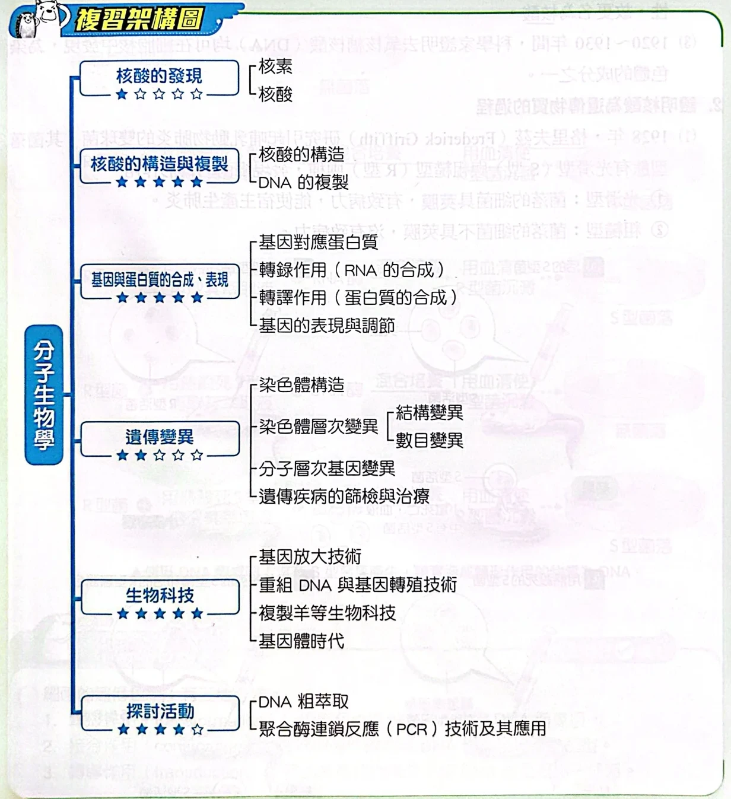
如果把其中一種物質拿掉，再看結果變不變，是不是比較容易判斷？實驗會用酶，也叫酵素，分解特定物質。
像 DNA 酶就是分解 DNA。不是加一種酶，就把全部東西一起分解掉。
對，另一種方法是做同位素標記。用帶放射性的原子當記號，就能追蹤物質跑到哪裡。
一種方法是拿掉後看影響，另一種是貼上記號追位置。兩種都在找誰真的帶著遺傳訊息。
換你：知道基因在染色體上，為什麼還要分別研究蛋白質和 DNA？
因為染色體同時含有蛋白質和 DNA，只知道基因的位置，還不能判定其中哪一種是遺傳物質。
從核素到核酸：找到它，等於知道它的工作嗎？
如果你找到一種新物質，會先用發現的位置替它命名嗎？1869 年，米歇爾從白血球的細胞核分離出一種大分子。
在細胞核找到，所以叫核酸？
當時先叫核素。到了 1889 年，阿特曼純化核素，發現它呈酸性，才改名叫核酸。
我把兩個發現合在一起了。米歇爾先從核裡找到核素，阿特曼再因為酸性改叫核酸。
1920～1930 年，多位科學家的研究確認 DNA 在細胞核中，是染色體的成分之一。到這裡，能直接宣布 DNA 是遺傳物質嗎？
它都在染色體上了，我會想說可以。
還不能，因為「在哪裡」和「做什麼」是兩個問題。這時只確定它是染色體的成分，還要靠後面的三個實驗，逐步確認它的角色。
所以發現核酸、知道 DNA 在染色體上，都還沒證明 DNA 負責遺傳。
換你：「核酸」這個名字的「核」和「酸」，分別來自什麼發現？
「核」來自米歇爾在白血球的細胞核中分離出這種物質，「酸」來自阿特曼發現它呈酸性。因為這兩項發現，名稱才從核素改成核酸。
格里夫茲：死菌沒復活，活菌卻變了
1928 年，格里夫茲研究會引起肺炎的肺炎雙球菌。培養皿上有光滑和粗糙兩種菌落，你覺得 S 型、R 型在描述什麼？
是在說一個細菌的表面光不光滑嗎？
要看的是菌落外觀，不是單一菌體的表面。S 型的菌落光滑，對應 smooth；R 型的菌落粗糙，對應 rough。
所以先看整個菌落的樣子。S 型有莢膜、會致病，R 型沒有莢膜、不會致病。
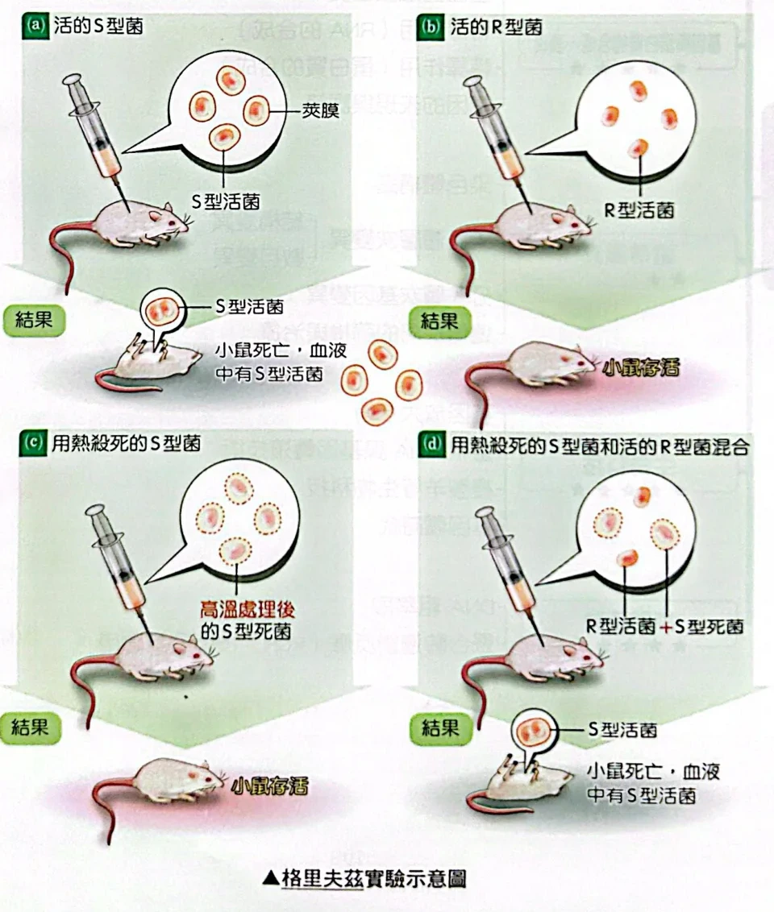
先看前三組：注入活 S 型，小鼠死亡；注入活 R 型，小鼠存活。第三組把 S 型熱殺死再注入，你猜結果呢？
S 型有莢膜，就算殺死，小鼠應該還是會死吧？
結果小鼠存活，因為死菌不能繁殖。這表示致病需要活菌繁殖，光有莢膜不夠，不能因此說莢膜與致病無關。
也就是活 S 型會致病，但熱殺的 S 型不能繁殖。不能只看到莢膜，就直接判定一定會致病。
第四組把熱殺 S 型＋活 R 型一起注入，小鼠卻死亡了。血液裡還找到活的 S 型，你會怎麼解釋？
兩種單獨都沒讓小鼠死，混起來卻死了。難道死掉的 S 型又活過來？
不是死菌復活，是死 S 型裡的某種物質進入了活 R 型。R 型因此變成 S 型，找到的活 S 型是從活 R 型轉形來的。
所以方向是死 S 型提供物質，活 R 型接受物質後改變。不是把東西送進死菌，讓死菌復活。
而且轉形後的細菌，後代也一直是 S 型。這代表什麼？
不只是當下看起來變了，改變還能傳給後代。這是可遺傳的性狀改變。
對，吸收外來物質而改變遺傳性狀，叫轉形作用。格里夫茲證明有轉形物質，但還沒有證明那個物質就是 DNA。
我現在只能說有東西讓 R 型變成 S 型，而且後代也維持 S 型。至於那個東西是什麼，這個實驗還沒回答。
換你：熱殺 S 型和活 R 型混合後找到活 S 型，能不能解釋成死 S 型復活？
不能，因為是死 S 型的某種物質進入活 R 型，使活 R 型轉形成 S 型，而且改變可以傳給後代；不是死菌復活。
艾佛瑞：拿掉誰，轉形就做不到？
1944 年，艾佛瑞接著找轉形物質。這次在培養皿裡，把熱殺 S 型的萃取液加入活 R 型一起培養，你覺得下一步怎麼查？
把 DNA、RNA、蛋白質全部拿掉，看 R 型還會不會變？
要每次只拿掉一種，才知道是哪一種影響結果。各組分別加 RNA 酶、蛋白酶或 DNA 酶，另外保留不加酶的一組。
對，如果一次全部拿掉，就算不轉形，也分不出缺的是誰。
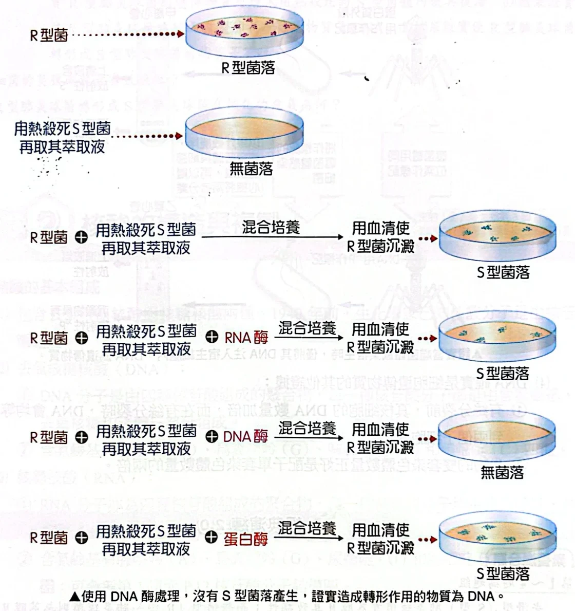
培養後還會加入抗 R 型的血清，讓沒有轉形的 R 型死亡沉澱。這樣盤子上長出的菌落，代表什麼？
沒轉形的 R 型已經被處理掉，所以有菌落就代表有轉形成功的 S 型。
結果不加酶的組有 S 型菌落，加 RNA 酶或蛋白酶也都有。既然 RNA 或蛋白質被破壞後還能轉形，就能排除它們是轉形物質。
所以不是看「加了酶有沒有菌」，就說酶讓它轉形。要看被拿掉的物質，是不是轉形必需的。
只有DNA 酶那一組沒有 S 型菌落，因為 DNA 被破壞後，轉形消失了。這支持DNA 是轉形物質。
拿掉 RNA 或蛋白質都還行，只有拿掉 DNA 就不行。關鍵是 DNA，不是負責分解它的 DNA 酶。
還有一盤只有萃取液，沒有加 R 型，結果沒有菌落。這是在確認萃取液本身沒有活 S 型，避免把混進去的活菌誤認為轉形結果。
所以要有活 R 型接受物質，才會出現轉形後的 S 型。萃取液不是原本就藏著活 S 型。
換你：為什麼「加蛋白酶仍有 S 型菌落，加 DNA 酶卻沒有」支持 DNA 是轉形物質？
因為蛋白質被破壞後轉形仍發生，DNA 被破壞後轉形卻消失，表示轉形需要的是 DNA。
赫希與蔡司：追著記號看誰進入細菌
如果想分開追蹤 DNA 和蛋白質，找成分簡單的材料會比較清楚。1952 年，赫希與蔡司用只有蛋白質外殼和 DNA 的噬菌體做實驗。
噬菌體就是這裡用的病毒，要進入細胞才能複製。它感染細菌後能做出新的噬菌體，所以要從這兩種成分找遺傳物質。
要分開追蹤，記號就得能分辨兩者。蛋白質含硫、幾乎不含磷；DNA 含磷、不含硫，所以用³⁵S 標記蛋白質、³²P 標記 DNA。
硫的記號追外殼，磷的記號追 DNA。不是把兩個記號都當成整隻噬菌體的去向。
如果改用 ¹⁴C、³H 或 ¹⁵N，能不能同樣分清楚？
不能，因為蛋白質和 DNA 都含 C、H、N。追到這些記號，也不知道是哪種物質。
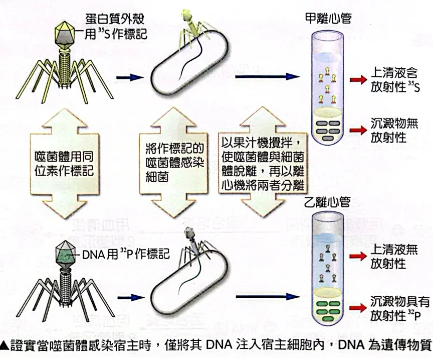
標記噬菌體、讓它感染細菌後，接著用果汁機攪拌。你覺得這一步要把什麼分開？
把細菌全部打碎，才看得到裡面的 DNA？
這裡的目的，是把附在細菌外的噬菌體外殼打下來。接著離心，細菌重會沉到底，較輕的外殼留在上清液。
所以攪拌先把外殼打下來，離心再把細菌和外殼分開。沉澱是細菌，上清液是外殼。
追蹤結果是：³⁵S 組的放射性在上清液，沉澱沒有；³²P 組在沉澱有，上清液沒有。你能把記號換回它代表的物質嗎？
外殼蛋白質留在細菌外，DNA 則進入細菌。可以記「S 在上、P 在下」，但要知道上是上清液，下是細菌沉澱。
細菌後來能做出完整的新噬菌體，包含蛋白質外殼和 DNA。既然進去的是 DNA，卻能指揮製造完整噬菌體，這支持什麼？
支持 DNA 是遺傳物質。不是看到外殼留在外面，就以為新噬菌體也不需要外殼。
讀這個實驗時，要把標記物質和最後位置連在一起。再加上能製造新噬菌體的結果，才接到 DNA 指揮複製的結論。
我會先說硫追蛋白質、磷追 DNA，再說它們在哪裡。最後才用 DNA 進入細菌、能指揮製造新噬菌體來下結論。
換你：為什麼 ³²P 的放射性出現在沉澱，可以用來判斷 DNA 進入細菌？
因為 ³²P 標記的是 DNA，而離心後的沉澱是細菌，兩者連起來就支持 DNA 已進入細菌。
其他證據：DNA 怎麼分，又怎麼傳進細菌？
如果 DNA 要把指令完整交給兩個子細胞，有絲分裂前應該先做什麼？
先把 DNA 加倍，分裂時再平均分配。這樣才符合完整複製、平分給後代的要求。
另一個證據是雙套（2n）細胞的 DNA 量，正好是配子（n）的兩倍。你會怎麼連到遺傳？
這符合父母各給一半的情形。DNA 的量和分配方式，都符合遺傳物質該有的表現。
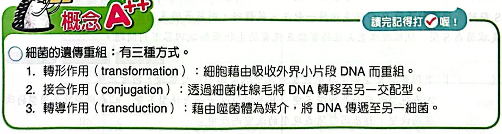
接著分三種細菌得到外來 DNA 的路。第一種，像 R 型取得 S 型 DNA，直接吸收環境中的小段 DNA，叫什麼？
叫轉形作用。重點是直接從環境吸收，不需要另一個細菌拉線連過來。
第二種，兩個細菌用性線毛連接，DNA 從一個傳到另一個，叫接合作用。
所以看到性線毛連接，就辨認成接合。不能只看到 DNA 換了地方，就都叫轉形。
第三種，由噬菌體當媒介，把 DNA 帶到另一個細菌，叫轉導作用。
我用路線來分：自己吸是轉形，牽線毛是接合，病毒帶是轉導。
這三種都是細菌得到新基因的方式，所以可以增加遺傳變異。正文提到的抗藥性擴散，就是相關例子。
三種方式的差別在 DNA 怎麼進來，共通點是讓細菌得到新基因。不是只有外觀變了，也和遺傳變異有關。
換你：兩個細菌以性線毛連接並傳遞 DNA，屬於哪種作用？三種重組方式的共同結果是什麼？
這是接合作用，三種方式都能增加細菌的遺傳變異。因為性線毛連接是接合的特徵，而轉形、接合、轉導都能讓細菌得到新基因。
遇到格里夫茲題組：先分觀察和推論
看到這類題組，先分清楚「實際看到什麼」和「能推論到哪裡」。如果題幹寫混合注射後小鼠死了，你還要抓哪個觀察？
還要抓血液中有活 S 型，並連到活 R 型轉形。不能直接跳成死 S 型復活，也不能說格里夫茲已證明轉形物質是 DNA。
對，再遇到莢膜和致病力，就回看熱殺 S 型那一組，記住死菌不能繁殖。遇到遺傳意義，就連回轉形後代維持 S 型，以及得到新基因能增加遺傳變異。
我先用實驗結果限制結論，再回答題目。不能因為知道後來的答案是 DNA，就把前面的實驗也說成已經證明了。
換你：題目說「格里夫茲已證明轉形物質是 DNA」，應該怎麼修正？
應改成「格里夫茲證明有轉形物質」。因為他的實驗還沒有確定物質種類，後來艾佛瑞才以酶處理實驗證明轉形物質是 DNA。
把三個實驗接成一條證據線
最後用三個問題收起來：有沒有轉形物質、它是什麼、誰進入細菌指揮複製。格里夫茲回答哪一個？
1928 年，格里夫茲用熱殺 S 型加活 R 型，證明有轉形物質，能讓 R 型變成 S 型。還沒回答它是什麼。
艾佛瑞在 1944 年，分別用酶破壞不同物質，接著回答轉形物質是 DNA。不過當時仍有人懷疑結果是否受到蛋白質雜質影響。
所以整理時要記住艾佛瑞的證據，也記住當時還存在的懷疑。不能把他的關鍵操作和格里夫茲的混合注射弄反。
1952 年，赫希與蔡司用 ³⁵S、³²P 分開追蹤，支持進入細菌、指揮複製的是 DNA。確認 DNA 是遺傳物質後，下一篇才接著問它長什麼樣子、怎麼複製。
整條線就是：先知道有轉形物質，再確認它是 DNA，最後追到 DNA 進入細菌指揮製造新噬菌體。每一步都要配上自己的操作和結果。
換你：哪兩個實驗分別用「拿掉關鍵物質」和「追蹤物質位置」來支持 DNA 的角色？
艾佛瑞用酶拿掉不同物質，赫希與蔡司用同位素標記追蹤位置。因為前者發現只有破壞 DNA 會讓轉形消失，後者發現進入細菌並指揮製造新噬菌體的是 DNA。
4-2 核酸的構造與 DNA 複製
DNA 和 RNA，先拆成積木看
上一節確認 DNA 是遺傳物質。你覺得要看懂它怎麼存訊息，先看整條的形狀，還是先認識組成它的積木？
先看積木吧。可是 DNA 和 RNA 名字不同，積木應該完全不一樣？
它們都屬於核酸，都由核苷酸一個接一個連成聚合物，這在 1940 年前就已經知道了。DNA 叫去氧核糖核酸，RNA 叫核糖核酸。每個核苷酸都包含含氮鹼基、五碳醣和磷酸。
所以兩種都有這三部分。去氧核糖的「去氧」，是把整顆醣的氧都拿掉嗎？
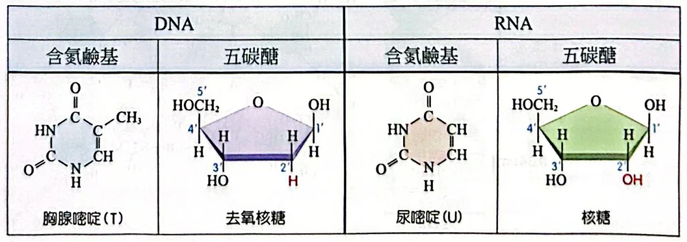
只差在五碳醣的2′ 碳：RNA 的核糖接 OH，DNA 的去氧核糖接 H，少一個氧。兩者都有磷酸，鹼基也都有 A、G、C。另一個差別是 DNA 用胸腺嘧啶 T，RNA 用尿嘧啶 U。
不是整顆醣都沒氧，是指定位置的 OH 變 H。分 DNA、RNA 時，也能注意 T 和 U。
鹼基還分兩類：嘌呤是 A、G，有兩個環；嘧啶是 C、T、U，有一個環。你可以記「嘌呤 AG，其餘嘧啶」，但要連環數一起認。
我先看三部分，再比醣和鹼基的差別。A、G 是雙環，C、T、U 是單環，不會把兩套分類混在一起。
換你：只看到核苷酸含有 A，能判斷它屬於 DNA 還是 RNA 嗎？
不能，因為 DNA 和 RNA 都有 A；可以再看五碳醣的 2′ 碳接 H 還是 OH。
鹼基的比例，怎麼變成構造的線索？
假如不同物種的 DNA 都用 A、T、G、C，你覺得它們的四種鹼基比例也一定相同嗎？
積木只有四種，我猜每種各占四分之一？
1950 年，查加夫分析許多物種的 DNA，發現不同物種的鹼基比例不同，呈現物種特異性。但在同一物種中，A 的量約等於 T，G 的量約等於 C。這個對應關係叫查加夫法則，不是說四種都相等。
那雙股 DNA 如果 A 是 30%，T 就是 30%。剩下 G 和 C 共 40%，兩個各 20%。
對，因為四種加起來是 100%，再用 G＝C 分掉剩餘比例。而 A＝T、G＝C 相加，就得到嘌呤與嘧啶各占 50%。但這套法則只適用雙股 DNA，不能直接套在單股 DNA 或 RNA 上。
所以我算之前，要先確認是不是雙股 DNA。查加夫看到一樣多，就已經知道它們一定配在一起了嗎？
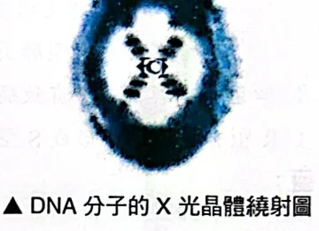
當時他只發現數量關係，還不知道原因。1952 年，富蘭克林以 X 光照 DNA 晶體，得到清楚的繞射圖，暗示 DNA 是螺旋形。比例和形狀是兩組線索，後來的模型才把它們連起來。
查加夫提供鹼基比例，富蘭克林提供螺旋形的線索。不能把後來的解釋，當成查加夫當時已經知道的事。
換你：雙股 DNA 的嘌呤為什麼占全部鹼基的 50%？
因為 A＝T、G＝C，所以嘌呤 A＋G 等於嘧啶 T＋C；兩類合計 100%，因此各占 50%。
雙股螺旋：配對之外，還要看方向
1953 年，華生和克里克參考前面兩組證據，提出雙股螺旋模型。如果把它想成扭轉的梯子，你猜訊息放在外側骨架，還是內側鹼基？
外側比較長，應該是骨架負責存訊息？兩股也都是朝同一邊排吧？
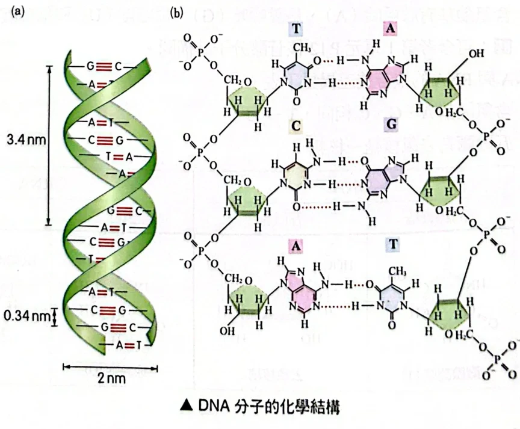
外側是五碳醣與磷酸交替相連，骨架相同，不靠它區分訊息。訊息在鹼基排列順序。兩股則反向平行，同一個方向看，一股是 5′→3′，另一股是 3′→5′。
骨架像固定的架子，內側排列才是內容。可是 5′ 端和 3′ 端，到底怎麼認？
5′ 端是五碳醣第 5 個碳接磷酸的那端，3′ 端是第 3 個碳帶OH的那端。內側 A 只配 T，兩者有 2 個氫鍵；G 只配 C，兩者有 3 個氫鍵。成對出現，就能解釋 A＝T、G＝C。
所以查加夫量到的相等，是配對的結果。G–C 比 A–T 多一個氫鍵，GC 比例高的 DNA 也比較不容易被加熱拆開。
對，醣－磷酸骨架在外、鹼基藏在中心，加上許多氫鍵把兩股拉住，讓 DNA 有穩定性。鹼基順序不受限制，又帶來多樣性：4000 個鹼基對就約有 4 的 4000 次方種排法。模型的直徑是 2 nm，相鄰鹼基對相距 0.34 nm，每圈 3.4 nm、10 對，這些尺寸對應 X 光繞射的數據。
穩定是構造能維持，多樣是順序能變化。寫互補股時，我是不是把 ATGC 換成 TACG 就好？
配對對了，還得標相反方向：5′-ATGC-3′對應3′-TACG-5′。如果要求互補股也從 5′ 端開始寫，就要把下面那股反過來讀，寫成 5′-GCAT-3′。後面兩股複製方式不同，也和這個方向差異有關。
我先上下對齊配對，讓兩股方向相反。需要從 5′ 開始回答時，再從互補股的 5′ 端讀，不能只換字母。
換你：5′-ATGC-3′ 的互補股，若也要從 5′ 端開始寫，應怎麼寫？
5′-GCAT-3′，因為互補股對齊時是 3′-TACG-5′，兩股反向平行，改從它的 5′ 端讀就得到 GCAT。
中心法則：訊息怎麼走到蛋白質？
DNA 存著訊息，細胞卻要做出實際功能。你覺得 DNA 是直接執行所有功能，還是要把訊息傳出去？
應該要傳出去。不過複製、轉錄、轉譯，聽起來都是抄一份，我分不清。
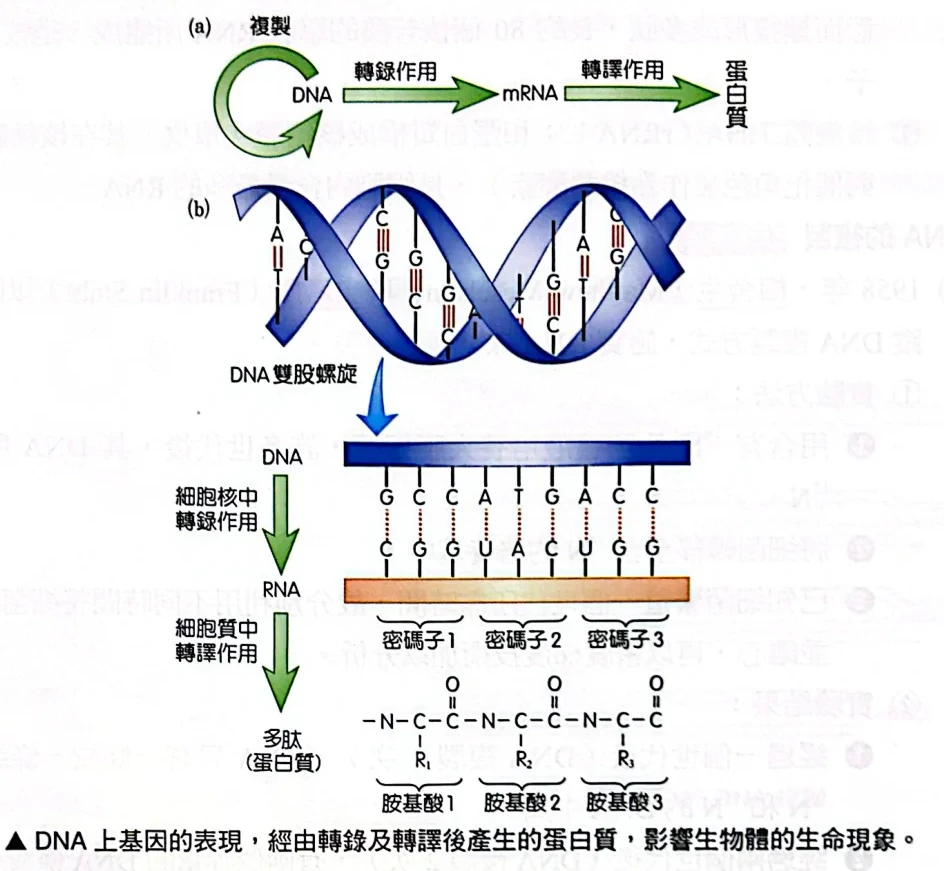
中心法則是在整理遺傳訊息的流向：複製是 DNA→DNA，讓細胞分裂時子細胞各有一套。轉錄是 DNA→mRNA，在細胞核進行；轉譯是 mRNA→蛋白質，在細胞質的核糖體進行。蛋白質如酵素才真正執行功能，所以 DNA 透過做出哪些蛋白質來決定性狀。
複製是在準備子細胞的 DNA，轉錄和轉譯則把訊息接到蛋白質。那 DNA 只在細胞核，RNA 只在細胞質嗎？
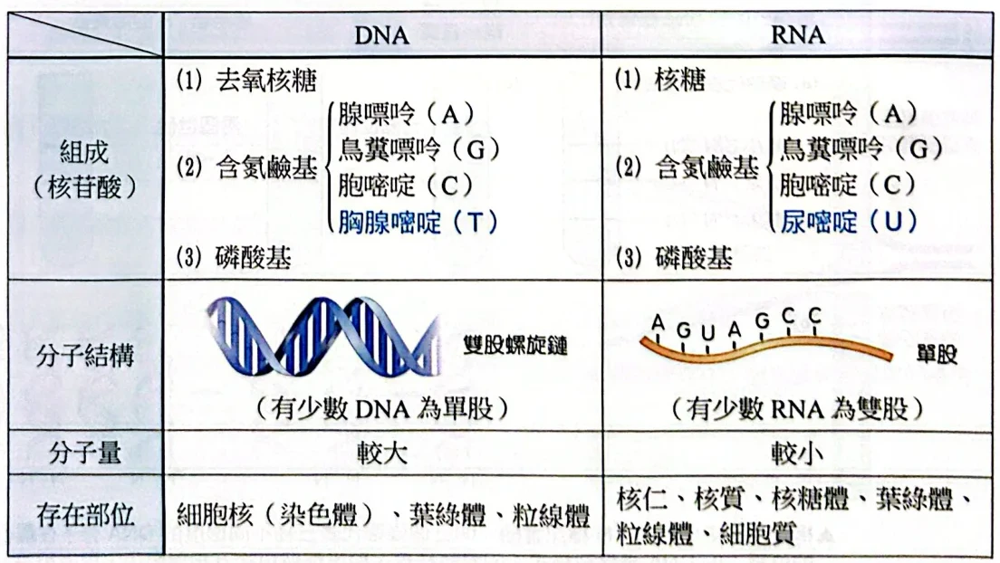
DNA 存在細胞核、粒線體、葉綠體；RNA 除了這三處，也在核仁、核糖體和細胞質。股數也別說死：少數病毒的 DNA 是單股，少數 RNA 是雙股。看到「一定」要留意，轉錄、轉譯的細節則留到下一篇。
我用訊息的起點、終點分三個過程。分布不能只記一個位置，也不能把 DNA、RNA 的股數說成完全沒有例外。
換你：DNA→mRNA 和 mRNA→蛋白質，分別叫什麼、在哪裡進行？
前者是轉錄，在細胞核；後者是轉譯，在細胞質的核糖體。因為兩者的訊息起點與產物不同，所以要分開辨認。
三種 RNA：帶訊息、送材料、組成核糖體
製作蛋白質時，要有訊息、送來胺基酸，也要有核糖體。你會把這三個工作全交給 mRNA 嗎？
mRNA 既然帶訊息，應該也最多吧？另外兩種可能只是幫忙。
mRNA叫傳訊 RNA，帶著從 DNA 抄下來的訊息，決定胺基酸順序；含量少但種類最多，可以先記每個基因一種。tRNA叫轉送 RNA，依 mRNA 的順序把特定胺基酸送到核糖體。它最小，約有 80 個核苷酸。
原來種類多，不等於總量多。mRNA 管訊息，tRNA 管運送，那 rRNA 就是核糖體的材料？
rRNA叫核糖體 RNA，與蛋白質一起組成核糖體，是細胞內含量最多的 RNA。它除了有結構功能，也有催化功能，屬於核酸酵素，因此不能說所有酵素都是蛋白質。口訣是 m 對 message、t 對 transfer、r 對 ribosome，分別連到訊息、運送、核糖體。
我分開記三個「最」：mRNA 種類最多、rRNA 含量最多、tRNA 最小。rRNA 能催化，也提醒我酵素不全是蛋白質。
換你：有人說「mRNA 種類最多，所以它在細胞內的含量最多」，哪裡錯了？
把種類和含量混在一起了，因為 mRNA 雖然種類最多，但含量少；細胞內含量最多的是 rRNA。
半保留複製：從離心帶追蹤舊股
一條雙股 DNA 複製成兩條後，原本的兩股會去哪裡？你會猜舊的整條留下，旁邊另做一條全新的嗎？
我會這樣猜。既然叫複製，不就是保留原件再做副本？
這叫保留複製，但還有兩種假說。半保留複製是舊兩股分開，各自當模版，所以每個新 DNA 都是一舊股加一新股。分散複製則是每一股裡都有新舊片段混在一起。
差別是舊股整條留在一起、各分到一個 DNA，還是切成片段混進每一股。可是這麼小，要怎麼追蹤？
1958 年，梅舍生與史塔爾利用 DNA 鹼基含氮，以氮的同位素標記。¹⁵N 比 ¹⁴N 重，含 ¹⁵N 的 DNA 密度大，離心後位置較低。他們先把大腸桿菌放在 ¹⁵N 培養很多代，讓 DNA 全重，再移到 ¹⁴N，讓新股變輕，每複製一次就取 DNA 離心。
所以重、輕是在分 DNA 的密度。第一代如果只出現中間帶，就能直接確定是半保留嗎？
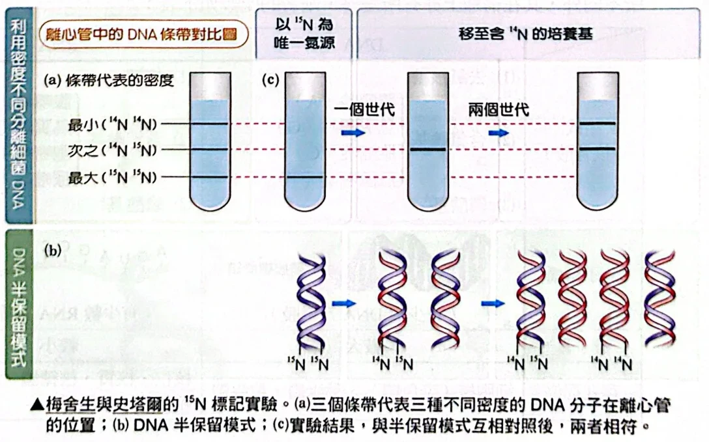
還不能，因為半保留和分散的第一代都只有中帶；保留卻預測重、輕兩帶，所以先被排除。第二代實測中：輕＝1：1，符合半保留；分散預測仍只有一帶，位置介於中與輕之間，才被排除。保留在第二代則會預測重：輕＝1：3，仍不符合。
要連看兩代，才能排除另外兩種。半保留第一代兩個 DNA 都是一重股配一輕股，第二代四個裡有兩個中、兩個輕。
從一個重 DNA 起算，第 n 代總數是2 的 n 次方；第 1 代後中帶一直對應 2 個分子，輕 DNA 是總數減 2。第 3 代就是 8 個，其中中帶 2 個占 1/4，輕帶 6 個占 3/4。原因是最初兩條舊股不消失，也不再互相配回去，所以第一代後就沒有重帶，中帶比例卻會下降。
我不能看到中帶比例變少，就說舊股消失了。舊股仍只有最初那兩條，是 DNA 總數一直增加，讓中帶占比變小。
換你：從一個重 DNA 開始，在 ¹⁴N 中複製到第三代，還有重帶嗎，中帶占多少？
沒有重帶，中帶占 1/4。因為兩條原始重股第一代就分開，第三代共 8 個 DNA，只有含這兩條舊股的 2 個屬於中帶。
DNA 複製：誰先動手，為什麼一股要分段？
知道每股能當模版後，真的複製時要從哪裡開始？你猜 DNA 聚合酶可以隨便找一處，直接把新股做出來嗎？
我以為它只要看到鹼基，就能從零開始配。兩股既然都要複製，應該也能一路連續做完？
先有起始蛋白附著在特定序列的複製起始點，把兩股拉開形成複製泡；泡的兩側 Y 形位置叫複製叉。接著解旋酶在複製叉把雙股螺旋鬆開。複製從起始點往兩邊同時展開，是雙向進行，直到整個分子複製完成。
起始點是起跑處，複製泡是打開的區域，兩側才是複製叉。那每條 DNA 都只要一個起始點嗎？
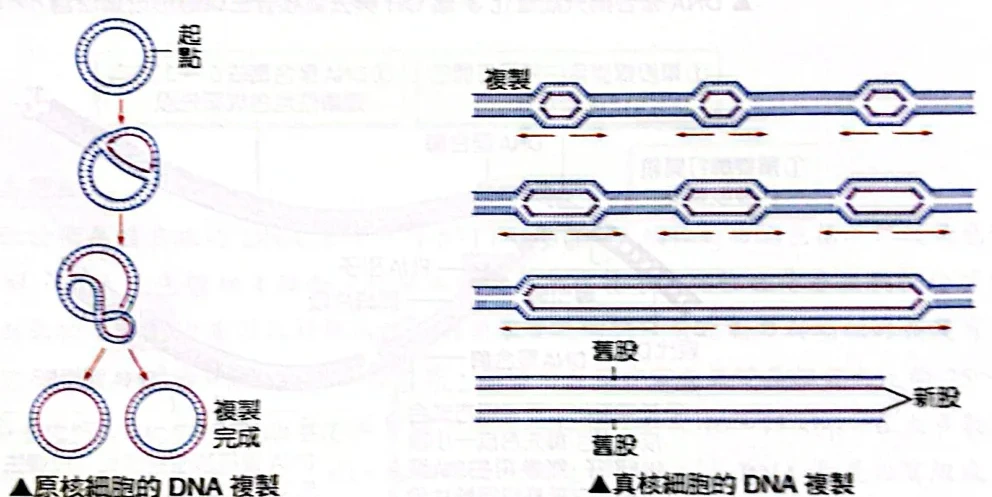
起始點的數目也有差別：原核細胞的環狀 DNA 有一個起始點；真核細胞的 DNA 很長，有許多起始點同時複製，才能及時做完。接著導引酶先合成約 10 個核苷酸的RNA 引子，讓它和模版互補配對。DNA 聚合酶不能從零開始，要有已配對的短鏈當起點。
原來 RNA 引子是先做好的起點，兩股都得用。可是為什麼不能在短鏈的任一端繼續接？
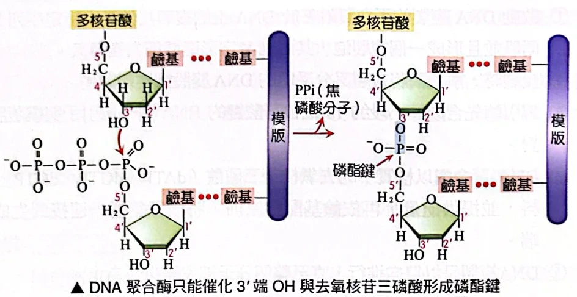
因為 DNA 聚合酶只能把核苷酸接到3′ 端的 OH，新股因此只能沿5′→3′延長，也就是沿模版的 3′→5′ 讀。原料是去氧核苷三磷酸 dATP、dGTP、dCTP、dTTP，依鹼基配對一個個接上。接上時放掉兩個磷酸，也就是焦磷酸，所以原料同時提供反應能量。
新股長出的方向被限制住了。兩股模版又是反向平行，所以不能都跟著同一個複製叉一路連續做。
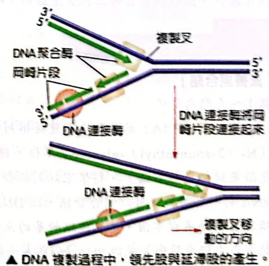
對，領先股沿著複製叉移動方向連續合成；延滯股每段的合成方向與複製叉移動方向相反，只能不連續地分段做。這些岡崎片段在真核約有 100～200 個核苷酸，在原核約有 1000～2000 個。每一段都需要新的 RNA 引子，但每一段的新股仍然都是 5′→3′ 合成。
延滯不是把合成方向改成 3′→5′，而是維持 5′→3′，分很多段做。那最後怎麼把一段段變成完整的一股？
引子最後要被換成 DNA，再由DNA 連接酶把片段接起來。延滯股要接合許多岡崎片段，所以需要連接酶較多，領先股較少。兩股都要引子，只是延滯股需要很多個，別把它說成只有延滯股需要。
我分清楚了：解旋酶鬆開、導引酶做 RNA 引子、DNA 聚合酶延長，最後連接酶接合。引子不是最後留下來的 DNA。
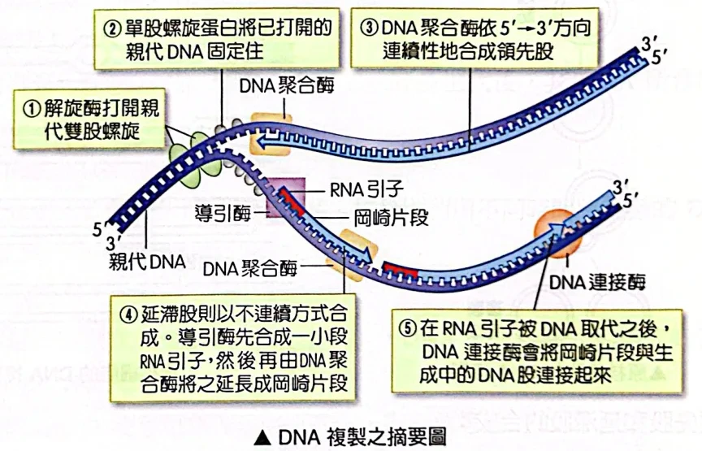
現在看摘要圖時，先找複製叉往哪邊走，再看新股的 5′、3′。你就能用方向判斷領先或延滯，不必只記圖上的上下位置。
我會先確認新股一定往 3′ 端延長，再拿它和複製叉比方向。同向連續的是領先股，反向分段的是延滯股。
換你：延滯股分段合成，是因為它能沿 3′→5′ 合成嗎？
不是，因為 DNA 聚合酶只能接在新股的 3′-OH，新股一律沿 5′→3′ 延長；模版反向平行，使延滯股必須分段合成，每段還要新的 RNA 引子。
PNA 題組：骨架換了，證據要重新看
這類閱讀題先把「骨架」「能存資訊」「已證實能催化」分開看。PNA 的骨架和 DNA 不同，你會直接判定它不能存資訊嗎？
我可能會，因為它不是五碳醣加磷酸。題幹又提到可能像酵素，所以我也會以為已經證明它能催化。
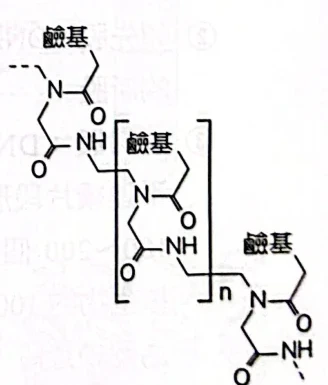
題幹說人工合成的 PNA 以重複的 N-(2-胺乙基)-甘胺酸單位，經肽鍵聚合成骨架並接上鹼基，比醣－磷酸骨架簡易、牢固。它能儲存資訊，也能以鹼基互補配對連結 DNA、RNA，所以別只看骨架就否定。但催化只是曾有的推斷，目前仍未發現 PNA 能催化；相較之下，許多天然或人工合成的 RNA 已具有催化能力。
我先圈出題幹實際給的性質，再區分「推斷」和「已發現」。骨架不同不等於不能存資訊，也不能把 PNA 可能有的能力，當成已經確認。
換你：題幹提到 PNA 可能有催化能力，能直接當成已證實嗎？
不能，因為題幹明說 PNA 目前仍未被發現能催化反應，而許多 RNA 的催化能力已有依據。
端粒題組：先看末端問題，再判斷資料
延滯股最末端的 RNA 引子拿掉後，如果沒有可用的 3′ 端接回去，會怎樣？
那一小段就補不起來，複製一次末端會短一點。這樣不就可能一直磨到基因？
所以染色體末端有端粒，是 5′-TTAGGG-3′ 的 DNA 重複序列，不含基因，先被磨短就能保全基因。它也保護染色體不被核酸酶分解、防止染色體相互融合，並確保基因完全複製。端粒還是基因調控的特殊位置，常可抑制附近基因的轉錄活性。
端粒不是補出所有基因，而是讓末端先有一段可磨短的序列。那它越長，動物壽命就一定越長嗎？
不能跨物種直接這樣推：老鼠平均壽命 2～3 年，端粒約 25～150 kbp，長度變異也大；人類平均壽命約 70～80 年，正常體細胞端粒卻約 10～15 kbp。細胞分裂能力與端粒長度有關，端粒短到某個程度，細胞就停止分裂。這不等於只靠端粒長度，就能排列不同動物的壽命。
同一個末端逐次縮短的問題，和拿兩種動物比較壽命，是不同判斷。那有沒有辦法延長端粒？
大多數真核生物由端粒酶催化延長端粒，它由 RNA 和蛋白質組成，會以自己的 RNA 當模版合成端粒 DNA。它是一種反轉錄酶，也就是 RNA→DNA，方向和轉錄相反。一般體細胞不表現或只表現極微量端粒酶，癌變後活性則明顯增高。
所以閱讀時要分清楚：端粒本身是 DNA，端粒酶卻包含 RNA 和蛋白質。看到癌變後活性增高，也不能自己加成「活性越大，癌變程度就越大」。
對，題幹給的是癌變後活性增高，沒有提供你說的程度關係。寫序列時也先確認模版是 RNA：用 U，並和產物保持互補、反向平行。不要只背端粒的字母，就漏看題目問的是產物還是模版。
我先辨認分子與功能，再看資料真的支持什麼。遇到序列才回到配對、RNA 用 U、兩股方向相反這三件事。
換你：端粒酶為什麼稱為反轉錄酶？
因為它以自身的 RNA 為模版合成端粒 DNA，訊息方向是 RNA→DNA，與轉錄的 DNA→RNA 相反。
把整篇接起來：讀到線索，先檢查前提
最後你來當老師：看到鹼基百分比、互補序列、¹⁵N 轉 ¹⁴N，分別先檢查什麼？
百分比先確認雙股 DNA，才用 A＝T、G＝C、嘌呤與嘧啶各 50%；互補序列要標相反方向，RNA 用 U。氮標記則追最初兩條舊股：從一個重 DNA 起算，第一代後沒有重帶，中帶是 2 個，總數是 2 的 n 次方。
再把複製和 RNA 接上：新股只沿5′→3′延長，與複製叉同向的連續合成，另一股分段。引子是 RNA，延長 DNA 的原料則是去氧核苷三磷酸，別混成同一種東西。三種 RNA 要分開比種類、含量和大小，下一篇才會細談訊息怎麼轉錄、轉譯。
我會先問題目在比哪件事，再套規則。mRNA 種類最多、rRNA 含量最多、tRNA 最小；不能只看到「最多」就急著選。
換你：把「引子是 DNA，因為正在複製 DNA」改成正確說法。
引子是 RNA，最後會被換成 DNA。因為 DNA 聚合酶不能從零開始，需要導引酶先做出 RNA 引子，才能接著延長新股。
4-3 基因表現：轉錄、轉譯與調控
基因怎麼透過酵素影響性狀？
你覺得基因是直接變成性狀嗎？1909 年，蓋羅提出：基因藉著產生酵素，催化特定反應，決定表現型。
所以基因只要存在，細胞就一定做得出需要的養分？
還要看基因有沒有正常運作。1949 年，畢德和特吞用紫外線讓紅麵包黴突變，再觀察它能不能生長。最低限度培養基只有蔗糖、必需無機物和一種維生素，野生株能自己製造其他養分。
突變株如果長不了，就是某一步做不下去？
對，這裡要做出精胺酸才能長。路線是前驅物 → 鳥胺酸 → 瓜胺酸 → 精胺酸，三步依序需要酵素 A、B、C。補上阻斷處之後的物質，就能繞過缺少酵素的那一步。
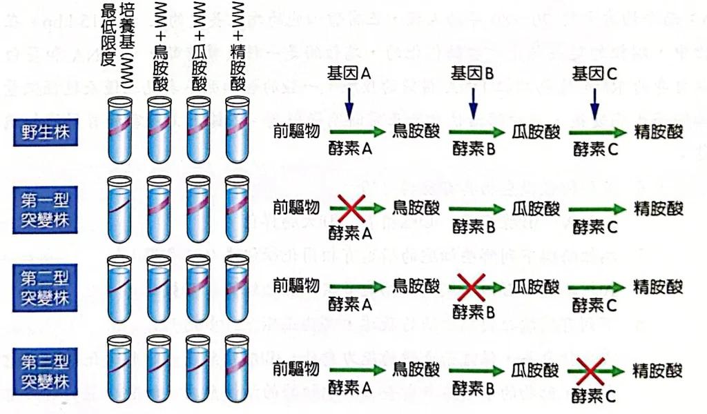
把能救活的物質放回路線，就能推論缺哪種酵素。每型只壞一個基因、缺一種酵素，支持一基因一酵素假說。
| 突變株 | 補什麼能長 | 缺少 |
|---|---|---|
| 第一型 | 鳥胺酸、瓜胺酸、精胺酸任一種 | 酵素 A |
| 第二型 | 瓜胺酸或精胺酸 | 酵素 B |
| 第三型 | 只有精胺酸 | 酵素 C |
後來發現，有些蛋白質含多條多肽，例如血紅素有 4 條，每條各由一個基因決定，因此修正為一基因一多肽。但有些基因只轉錄成 tRNA、rRNA，不轉譯。於是基因更完整的定義是一段具有功能的 DNA。
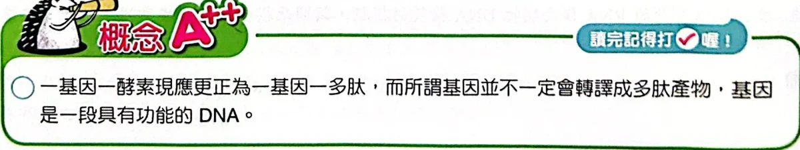
所以補進去的物質不是缺少的酵素。我要找能救活的最上游物質，再往前找壞掉的步驟；基因也不一定都做出多肽。
換你：第二型補鳥胺酸仍不能生長，補瓜胺酸卻可以，阻斷在哪一步？
阻斷在鳥胺酸變成瓜胺酸的步驟，缺少酵素 B。因為補鳥胺酸仍跨不過這一步，直接補瓜胺酸才能繼續製造精胺酸。
轉錄時，到底讀 DNA 的哪一股？
DNA → RNA → 蛋白質是中心法則。第一步轉錄，就是依 DNA 訊息合成 RNA；你覺得同一個基因會把兩股都讀一遍嗎？
DNA 複製用兩股當模版，所以轉錄應該也用兩股？
一個基因只讀其中一股，叫模版股。另一股叫編碼股，序列和 RNA 相同，只是 DNA 的 T 換成 RNA 的 U。不同基因可以選不同的那一股當模版。
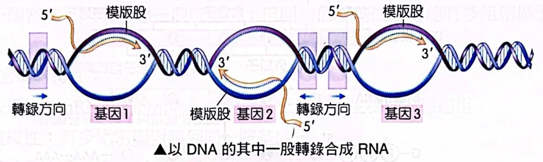
那轉錄前，還要像複製一樣找解旋酶和引子來嗎？
不用，RNA 聚合酶先結合啟動子，自己解開雙股，也不需要引子。延長時用 ATP、GTP、CTP、UTP 當原料和能量，讓 RNA 沿 5′→3′ 合成，其中 U 和 A 配對。遇到終止序列，RNA 聚合酶脫離 DNA，放出 RNA。
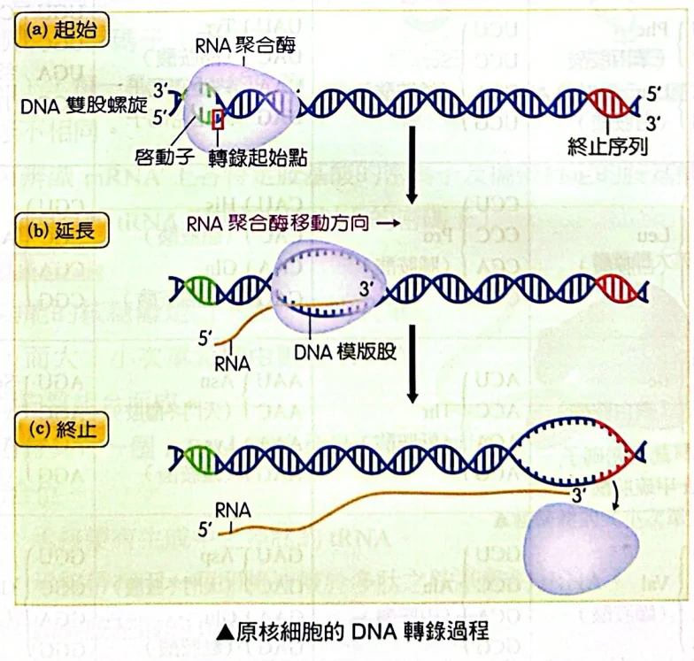
複製和轉錄都讓新股沿 5′→3′ 延長，但其餘要分清楚。
| 比較 | DNA 複製 | 轉錄 |
|---|---|---|
| 酵素 | DNA 聚合酶，另需解旋酶、導引酶 | RNA 聚合酶 |
| 模版 | 兩股 | 一個基因只用一股 |
| 原料 | 去氧核苷三磷酸，dATP 等，含 dTTP | 核苷三磷酸，ATP 等，含 UTP |
| 產物 | 整條雙股 DNA | 一段單股 RNA |
我試讀正文的例子：模版股 3′-TACGGA-5′，轉成 mRNA 就是 5′-AUGCCU-3′。所以編碼股是 5′-ATGCCT-3′。
對，互補時還要顧到方向。你先辨認題目給的是模版股還是編碼股，再決定要互補，還是只把 T 換成 U。
換你：轉錄時為什麼不必另外準備解旋酶與引子？
因為 RNA 聚合酶能自己解開 DNA 雙股，開始合成 RNA 也不需要引子。
真核 mRNA 做好，還要加工嗎？
真核細胞剛轉錄出的 mRNA，可以立刻離開細胞核去轉譯嗎？
訊息都抄好了，應該直接送出去就行？
剛做好的叫前驅 mRNA，要先在核內加工。5′ 端加甲基鳥糞嘌呤核苷帽，3′ 端加多腺苷酸尾，也就是 poly-A 尾。中間再切掉內含子，把外顯子接起來，這叫RNA 剪接。
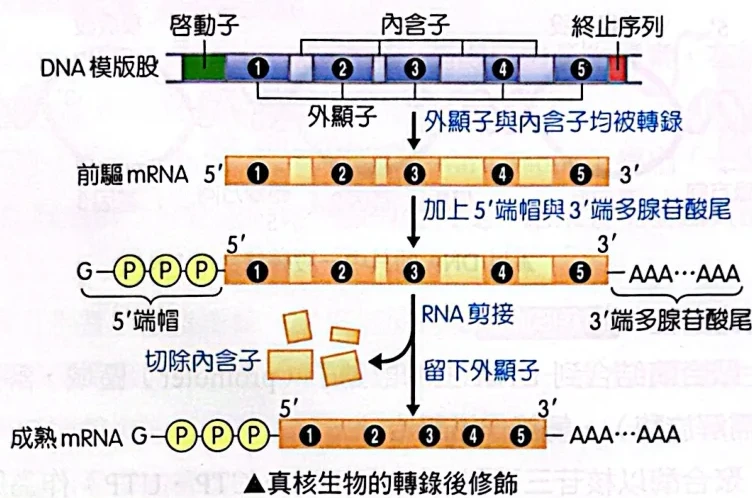
所以留下的是內含子？一條 mRNA 也能切成好幾種蛋白質的訊息？
記成「內含子被切掉，外顯子被表現」。真核一條 mRNA 只有一個讓核糖體開始的位置，做一種蛋白質。同一個前驅 mRNA 卻能用選擇性剪接保留不同外顯子組合，形成不同 mRNA，讓同一基因產生不同蛋白質。
懂了，是同一份前驅 mRNA 能有不同剪接方式，不是說一條成熟 mRNA 同時做很多種。原核細胞沒有這裡說的加帽、加尾、剪接。
換你：同一基因如何經由剪接產生不同蛋白質？
可經由選擇性剪接形成不同 mRNA。因為同一個前驅 mRNA 能保留不同的外顯子組合，傳出的訊息就可能不同。
三個鹼基，怎麼指定一個胺基酸？
RNA 有 4 種鹼基，卻要對應 20 種胺基酸，你覺得每次讀兩個夠嗎？1966 年，尼倫柏格和柯拉納在試管中人工合成多肽，解讀了這套遺傳密碼。
兩個應該夠吧？還是只能排出 4×4＝16 種，不夠分？
對，一個只能分 4 種，兩個有 16 種，三個才有 4×4×4＝64 種。mRNA 每三個鹼基是一個密碼子，其中 61 個對應胺基酸，3 個負責終止。查表要用 mRNA，從 5′ 端依序看第一、第二、第三個鹼基。
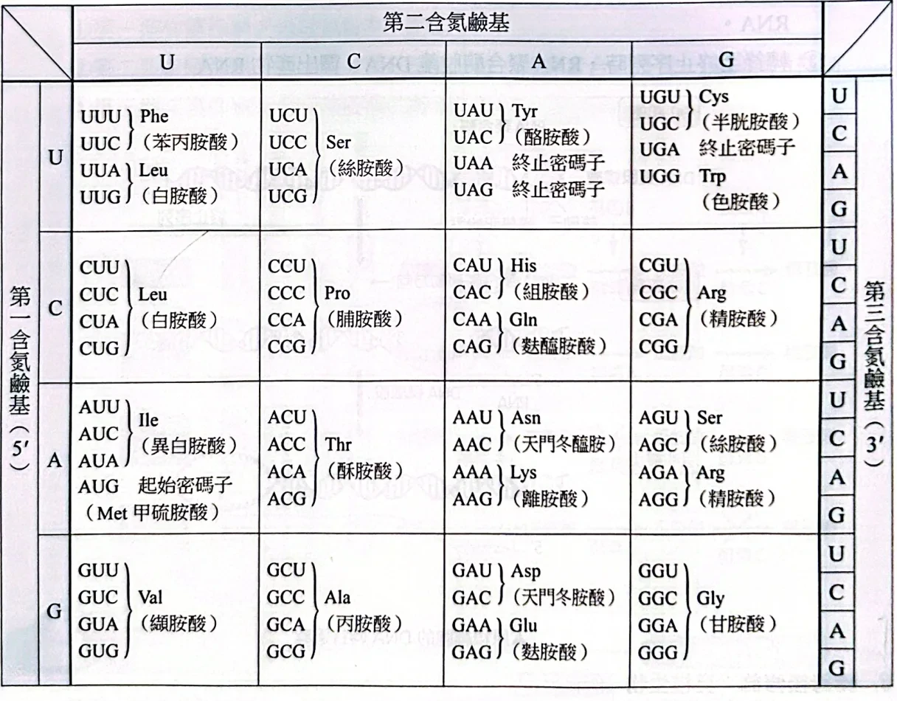
AUG 是起始密碼子，也指定甲硫胺酸 Met，新做好的多肽以它開頭。UAA、UAG、UGA 都不對應胺基酸。一個密碼子只指定一種胺基酸，但多個密碼子可指定同一種，這叫重複性。
因此，有些鹼基改變不會改變胺基酸。密碼也有普遍性，幾乎所有生物共用。因此人的基因放進細菌，也能做出同樣蛋白質。
我用正文的模版股 3′-TAC｜GGA｜AAA｜ATT-5′ 來試。先轉成 5′-AUG｜CCU｜UUU｜UAA-3′，查到 Met、Pro、Phe、終止。這樣是 4 個胺基酸？
是 3 個，因為終止密碼子不帶來胺基酸。從起始密碼子到終止密碼子之前的鹼基數除以 3，才是胺基酸數。你已經做對最重要的一步：先轉成 mRNA，再從 5′ 端查表。
所以我查的是 mRNA 的三個鹼基，不直接拿 DNA 查。AUG 要算一個 Met，終止密碼子不算胺基酸。
換你：為什麼不能把 64 個密碼子都當成會加入胺基酸？
因為其中只有 61 個對應胺基酸，UAA、UAG、UGA 這 3 個是終止密碼子，不對應胺基酸。
tRNA 搬什麼，核糖體又做什麼？
轉譯是在細胞質的核糖體，依 mRNA 訊息合成多肽。你覺得 tRNA 的反密碼子，是拿來接胺基酸的地方嗎？
名字像密碼，所以我以為胺基酸就接在那裡。
胺基酸接在 tRNA 的3′ 端 CCA，這個末端每種 tRNA 都一樣。中環的反密碼子則因 tRNA 而不同，負責和 mRNA 密碼子互補配對。tRNA 是單股自己摺起來，形成 4 段鹼基配對區和 3 個環。
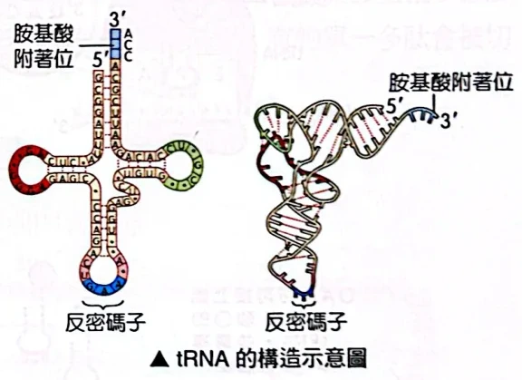
有 61 個對應胺基酸的密碼子，那一定要有 61 種 tRNA 嗎？
不必，tRNA 約有 45 種。因為有些 tRNA 能辨認兩種以上的密碼子，所以種類可以比密碼子少。
核糖體有大、小次單元，各含數種 rRNA 和多種蛋白質，共有一個 mRNA 結合位、三個 tRNA 結合位。把這三個位置想成不同工作站，就比較好記。
| 位置 | 放什麼 | 記法 |
|---|---|---|
| A 位 | 帶下一個胺基酸、剛進來的 tRNA | arrive，進來 |
| P 位 | 帶生成中多肽的 tRNA | peptide，多肽 |
| E 位 | 卸下胺基酸、準備離開的空 tRNA | exit，離開 |
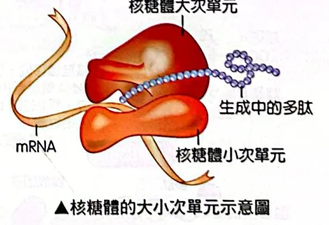
細菌核糖體是 70S，人的則是 80S，這個差異讓藥物能選擇性抑制。氯黴素只卡住 70S；環己醯亞胺只卡住 80S，可對抗真核的真菌。S 是離心時的沉降係數，不是重量，不能直接相加。
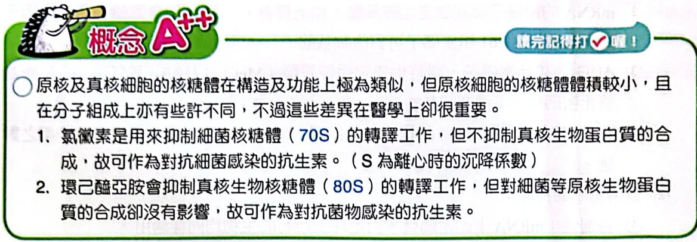
我把兩件事分開了：反密碼子認訊息，CCA 端接胺基酸。核糖體的 A、P、E 位各有工作，也要分清原核、真核核糖體的差別。
換你：tRNA 的胺基酸附著位與反密碼子，各負責什麼？
3′ 端 CCA 是胺基酸附著位，中環的反密碼子負責和 mRNA 密碼子配對。因為接胺基酸和辨認密碼子是兩種工作，位置不能混用。
核糖體怎麼一步步接長多肽？
你記得一般新進來的 tRNA 到 A 位。那起始時，第一個帶 Met 的 tRNA 也一定先到 A 位嗎？
應該是吧，不然剛剛的 A＝進來就用不上了？
起始是要特別記的情況：小次單元先結合 mRNA，找到 AUG。帶 Met 的 tRNA 用 3′-UAC-5′ 反密碼子配對，位在P 位，大次單元再結合。
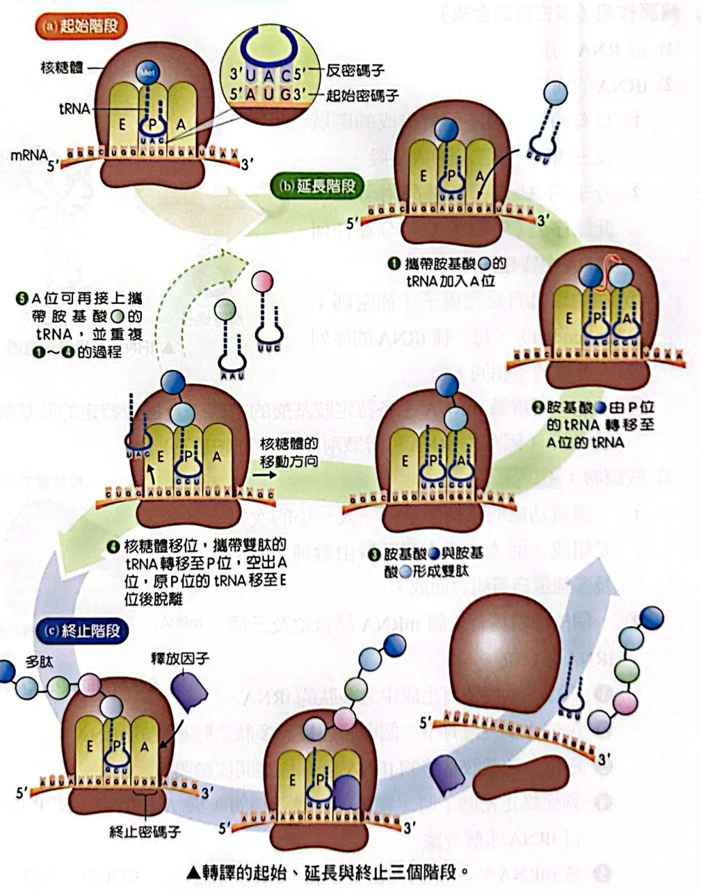
延長時，帶下一個胺基酸的 tRNA 進 A 位。P 位的胺基酸或多肽轉接到 A 位的胺基酸上，形成肽鍵。
接著核糖體往 mRNA 的 3′ 方向移一個密碼子。A 位 tRNA 移到 P 位，原 P 位的空 tRNA 經 E 位離開。空出的 A 位再接下一個 tRNA，重複這一輪。
所以每輪都空出 A 位，讓下一個進來。遇到終止密碼子，就換帶著「終止」的 tRNA 進來？
沒有 tRNA 能和終止密碼子配對，進 A 位的是蛋白質釋放因子。它讓多肽從 tRNA 水解脫離，核糖體也分開。整體讀 mRNA 的方向是 5′→3′，多肽則從胺基端 NH₂ 開始，到羧基端 COOH 結束。
要大量製造時，一條 mRNA 可同時讓多個核糖體轉譯，叫聚核糖體。愈早開始的走得愈遠，愈靠近 3′ 端，帶著的多肽也愈長。它們讀同一條訊息，所以做的是同一種多肽。
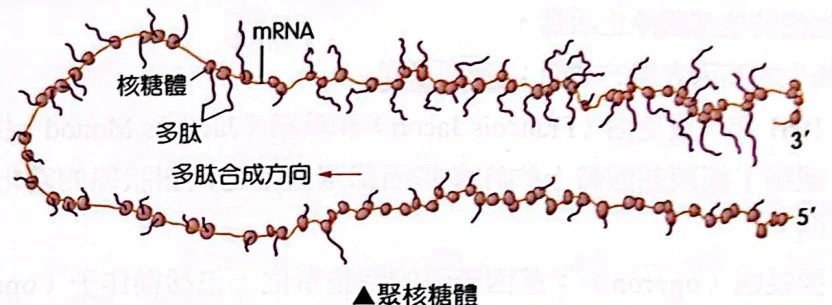
我重講一次：起始 tRNA 在 P 位，延長時新 tRNA 進 A 位，空 tRNA 從 E 位離開。終止靠釋放因子；聚核糖體只是同種多肽的製造進度不同。
換你：同一聚核糖體上，靠近 mRNA 3′ 端的核糖體，為什麼帶著較長多肽？
因為核糖體沿 mRNA 的 5′→3′ 方向讀取，較早開始的走得較遠，也已接上較多胺基酸。
多肽做好之後，原核與真核還有哪些差別？
多肽離開核糖體，就一定能發揮功能了嗎？
胺基酸都接好了，應該已經是能用的蛋白質？
還不一定，常要經轉譯後修飾。可能接上醣類、脂質、磷酸基或金屬離子，也可能切掉胺基端一個或數個胺基酸，例如開頭的 Met。還可能把一條多肽切成兩段或更多段。
例如胰島素先做成一條多肽，酵素切掉訊息序列和中間片段。留下靠雙硫鍵相連的兩段多肽，才有功能。接著比較原核、真核時，也別把「轉錄後加工」和這裡的「轉譯後修飾」混在一起。
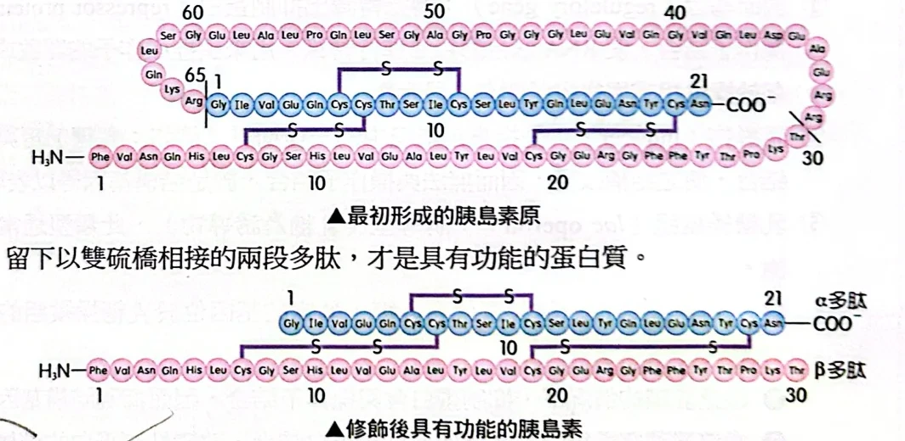
原核沒有核膜隔開，轉錄還沒結束就能轉譯；真核要先在核內加工完，再送出核。原核 mRNA 有多個起始點，所以一條能做多種蛋白質。
| 比較 | 原核 | 真核 |
|---|---|---|
| 轉錄／轉譯地點 | 細胞質／細胞質 | 細胞核／細胞質 |
| 能否邊轉錄邊轉譯 | 能 | 不能 |
| mRNA 加工 | 無 | 加帽、加尾、剪接 |
| 一條 mRNA 的蛋白質種類 | 多種 | 一種 |
| 核糖體 | 70S | 80S |
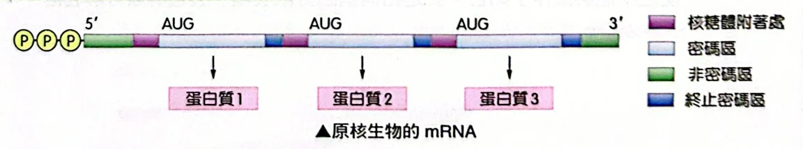
所以「多個核糖體」和「多種蛋白質」要分開判斷。原核一條 mRNA 有多個起始點；真核同一基因做不同蛋白質，前面談的是選擇性剪接。
換你：為什麼原核能邊轉錄邊轉譯，真核卻不能？
因為原核沒有核膜隔開兩個過程；真核 mRNA 要先在細胞核內加工，再到細胞質轉譯。
操縱組的開關，究竟是誰卡住誰？
如果細胞讓所有基因一直表現，你覺得划算嗎？細胞會為了節省能量或細胞分化，選擇性開關基因。1961 年，賈克伯和莫諾用大腸桿菌提出乳糖操縱組，說明環境如何影響基因表現。
那細菌要關掉基因，是把基因拿走嗎？
這裡是擋住轉錄，不是拿走基因。啟動子是結構基因前的一小段 DNA，讓 RNA 聚合酶附著；操作子是緊鄰結構基因的 DNA 開關。抑制蛋白結合操作子，RNA 聚合酶就過不去。
抑制蛋白也是操縱組裡的結構基因做出來的嗎？
結構基因是一個或數個相鄰基因，轉錄、轉譯後做出酵素；抑制蛋白由調節基因製造。調節基因在操縱組外，可以離它近或遠。操縱組只包含啟動子、操作子、結構基因，不含調節基因。
乳糖操縱組是誘導型，平常關，有乳糖才開。沒有乳糖時，抑制蛋白有活性，卡住操作子。有乳糖時，乳糖作為誘導物，結合抑制蛋白，使它變形、失去活性。
阻擋解除後，結構基因就能轉錄，做出 3 種分解乳糖的酶。分解乳糖是異化代謝。沒乳糖就不必浪費能量做分解酶。
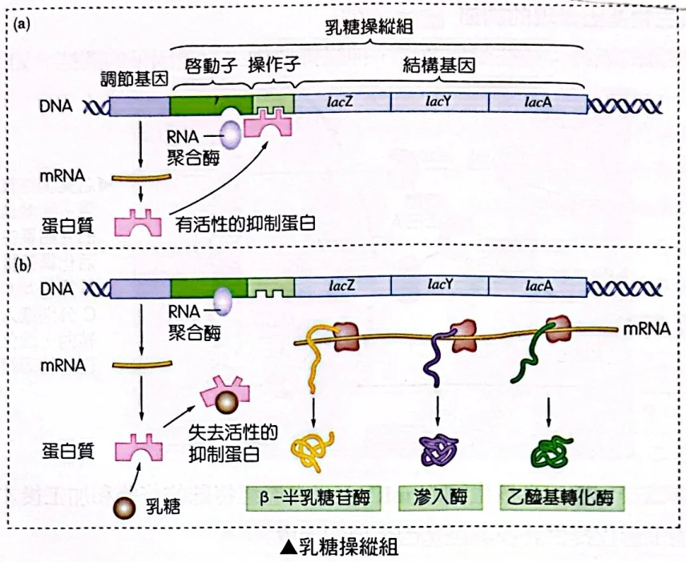
所以有乳糖就開。那色胺酸多時，也會讓合成色胺酸的基因打開？
色胺酸操縱組是抑制型，平常開，色胺酸夠了才關。平常抑制蛋白沒活性，不會卡住操作子。缺色胺酸時，能做出 5 種合成色胺酸的酶。
色胺酸多時，它作為共同抑制物，讓抑制蛋白活化。抑制蛋白卡住操作子，就關閉轉錄。合成色胺酸是同化代謝，已經夠了就不用繼續做。
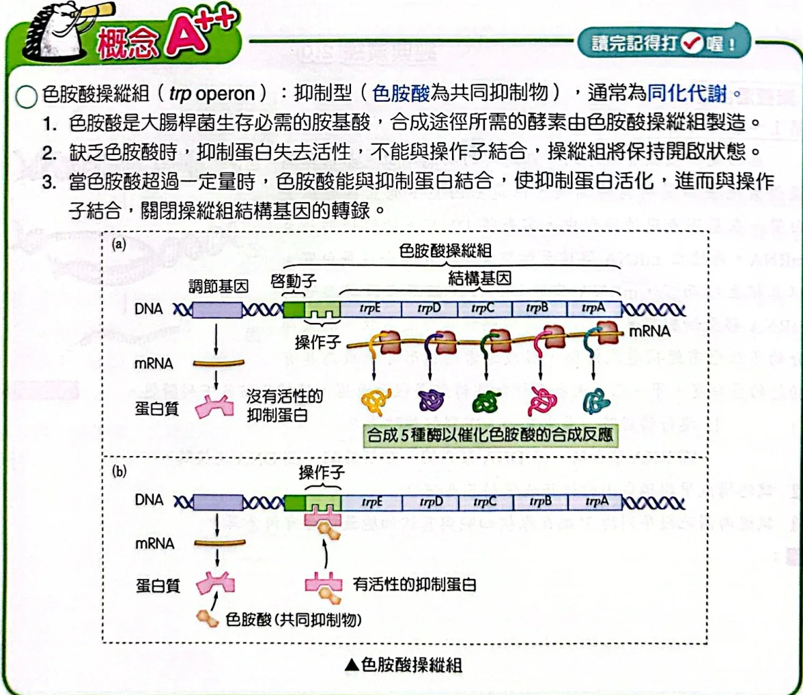
突變也用「有沒有卡住」來推理。抑制蛋白不能結合操作子，或操作子變得讓它認不得，都會一直開。若只是不讓抑制蛋白結合乳糖，卻仍能結合操作子，它就一直卡著，操縱組一直關。
我不只背「有就開」了。乳糖讓抑制蛋白失活，色胺酸讓抑制蛋白活化；最後都回來看它有沒有卡住操作子。
換你：乳糖與色胺酸讓各自的抑制蛋白產生什麼相反變化？
乳糖讓抑制蛋白失去活性，色胺酸讓抑制蛋白活化。因為前者要解除阻擋，製造分解乳糖的酶；後者要在色胺酸足夠時阻擋轉錄，停止製造合成酶。
真核細胞只在轉錄時調節嗎？
同一個人的肌肉細胞和神經細胞，為什麼會不同？你會先猜它們拿到不同的 DNA 嗎？
會，做的事情不一樣，我以為裡面的基因也不一樣。
這裡的重點是 DNA 相同，表現的基因不同。真核能在轉錄、轉錄後、轉譯後調節。轉錄會受激素、神經傳遞物、生長因子等訊號影響：訊號活化調節蛋白，再由調節蛋白到核內控制轉錄。
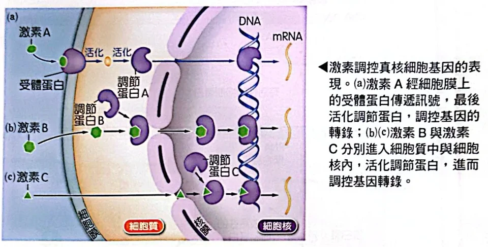
所以圖裡的激素，都得自己進細胞核找 DNA？
不是，激素 A 不進細胞，接上細胞膜受體後把訊號往內傳。B、C 能進入細胞質或細胞核，直接活化調節蛋白。
轉錄後可透過加帽、加尾、剪接等加工調控，例如選擇性剪接。轉譯後還能調節蛋白質的活化與修飾，例如胰島素原切成胰島素。
原來不是只有最前面一個開關。訊息怎麼抄、抄好怎麼加工、多肽怎麼變成有功能的蛋白質，都能影響最後結果。
換你：選擇性剪接與胰島素原切成胰島素，分別是哪個階段的調節？
前者是轉錄後調節，後者是轉譯後調節。因為剪接處理的是 RNA，胰島素原的切割處理的是已合成的多肽。
轉錄題組：先認流程，再看題目問哪個位置
看到轉錄示意圖，你會直接把甲、乙、丙的名稱背起來嗎？試著先用剛學的流程認圖。
我先找 DNA、轉錄中的位置、做出來的 RNA。但看到雙股打開，我可能又會選解旋酶。
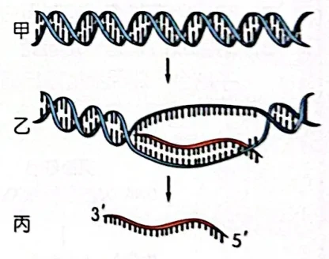
先問產物：做 RNA 就想到 RNA 聚合酶與核苷三磷酸，別把複製原料混進來。再看題目問的是哪一端，5′ 帽與 3′ 尾不能對調。真核還要串好「核內轉錄、加工、送到細胞質、轉譯」，大部分多肽再經摺疊或修飾形成適當構形，才有功能。
所以我先辨認物質與過程，再對準題目問的端點。不能看見 RNA 就把所有加工名稱一口氣填上去。
換你：讀圖時，為什麼要先分清產物是 DNA 還是 RNA？
因為兩者合成時使用的聚合酶和原料不同，先認清產物，才能避免把 DNA 複製和轉錄混在一起。
操縱組表格：把變化接成因果
演練表格同時列蛋白質、DNA 區域和 mRNA，你會怎麼讀？
我會先看誰的量上升，但很容易把抑制蛋白和結構基因產物搞混。
先沿同一種環境變化讀：乳糖高時，蛋白質 A 離開甲區，mRNA 丙上升；乳糖低時正好相反。色胺酸高時，蛋白質 B 結合乙區，mRNA 戊受抑制；色胺酸低時則脫離，戊上升。把「結合或脫離 → 能否轉錄 → mRNA 變化」串起來，再對照 mRNA 丁各種情況都無變化。
我懂了，要看一整條因果，不能只抓一格數據。判斷突變時也先說清楚壞的是哪個結合能力，再問操作子還有沒有被卡住。
換你：這類操縱組表格裡，為什麼要把抑制蛋白與 mRNA 的變化一起看？
因為抑制蛋白是否結合操作子會影響轉錄，mRNA 的變化可和這個開關狀態互相對照，幫助讀出因果。
轉錄轉譯綜合圖：先標方向，別急著相信畫法
綜合圖的線和箭頭很多，你會先信哪一個？這張先回到 DNA 與 RNA 互補而且反向平行的規則。
上方 DNA 是左 5′、右 3′，所以互補的 RNA C 就是左 3′、右 5′。不能因為平常從左往右看，就把左邊當 5′。
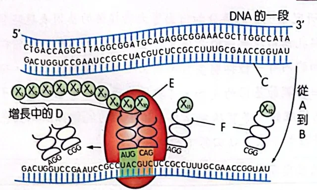
對，C 要從右邊的 5′ 端讀，不能直接照圖面左到右查密碼。圖中的反密碼子和下方 mRNA 每三個鹼基配對，但整體轉譯排列有方向矛盾。你要用「轉譯沿 5′→3′」核對箭頭與排列，也要檢查真核 mRNA 是否已加工。
我會先標端點，再看互補配對、轉譯方向和真核加工。即使是題目提供的圖，也要用正文規則核對，不硬背圖上位置。
換你：這張圖的 RNA 左端是 3′，要讀它的密碼子，應該從哪邊開始？
從右邊的 5′ 端開始。因為轉譯讀取 mRNA 的方向是 5′→3′，不能直接按圖面左到右讀。
把整篇接起來：看線索，找對步驟
最後你把整條路線說一次：看到突變株、DNA 序列、核糖體或操縱組，分別先問什麼？
突變株先找能救活的最上游物質，往前找阻斷步驟。DNA 序列先認模版或編碼股，轉成 mRNA，再從 5′ 端每三個查表。轉錄要 RNA 聚合酶、啟動子和核苷三磷酸，不搬用複製的解旋酶與引子。
核糖體則抓住進 A、長在 P、出 E，起始 tRNA 在 P 位，終止時釋放因子進 A 位。原核可邊轉錄邊轉譯、不經前面那三種 mRNA 加工，一條 mRNA 可做多種蛋白質。操縱組先看操作子是否被抑制蛋白卡住，也別把調節基因算進操縱組。
所以製造多肽時，要先轉錄，再轉譯，還可能需要加工與修飾。也要記得有些基因只做出有功能的 RNA。接著看 DNA 或染色體出錯時，我就能沿這條路想蛋白質和性狀可能怎麼變。
換你：同一人的肌肉與神經細胞不同，應先從基因表現的哪個重點理解？
先從表現的基因不同來理解。因為這些細胞的 DNA 相同，但會選擇性地表現不同基因，形成不同的細胞功能。
4-4 遺傳變異：染色體變異與基因突變
DNA 改變了，要從哪個尺度看？
前面說 DNA 的鹼基順序決定蛋白質，如果 DNA 改了呢？你覺得只會改到一個基因，還是整條染色體也可能變？
突變應該就是一個字母寫錯吧？整條染色體改變也算嗎？
也算，這是廣義的突變。大尺度是染色體構造或數目改變，小尺度是基因本身的鹼基改變。先分清尺度，後面才不會混在一起。
所以突變不只是一個字母錯，也可能是染色體少一段，或數目變了。
再看它怎麼收進細胞核：間期是分散細絲狀的染色質，分裂期聚集成短棒狀的染色體。染色體靠著絲點接上紡錘絲，再被拉開。紡錘絲由微管組成。
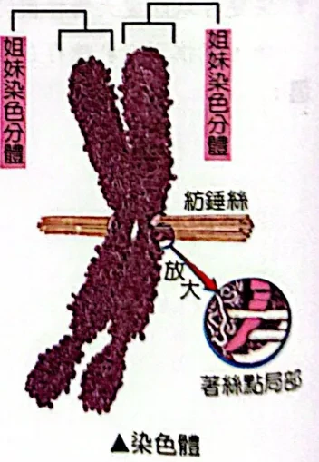
圖上兩條是複製出來的分身，叫染色分體，由中節連在一起。中節不一定在中央，短臂叫 p、長臂叫 q，所以 5p 就是第 5 號短臂。
對，未複製時，一條染色體含一個雙股 DNA 分子和許多蛋白質。複製後有兩條染色分體，才含兩個 DNA 分子。不能看到「雙股」就算成兩個分子。
所以雙股是同一個 DNA 分子的兩股；複製成兩條染色分體，才是兩個 DNA 分子。那 DNA 怎麼纏起來？
基本單位是核小體：H2A、H2B、H3、H4 各兩個，共八個組蛋白當核心。外面纏 1¾ 圈 DNA，約 140–165 個鹼基對。H1 組蛋白位在核小體之間約 10–90 對的 DNA 上，把核心和 DNA 扣緊。
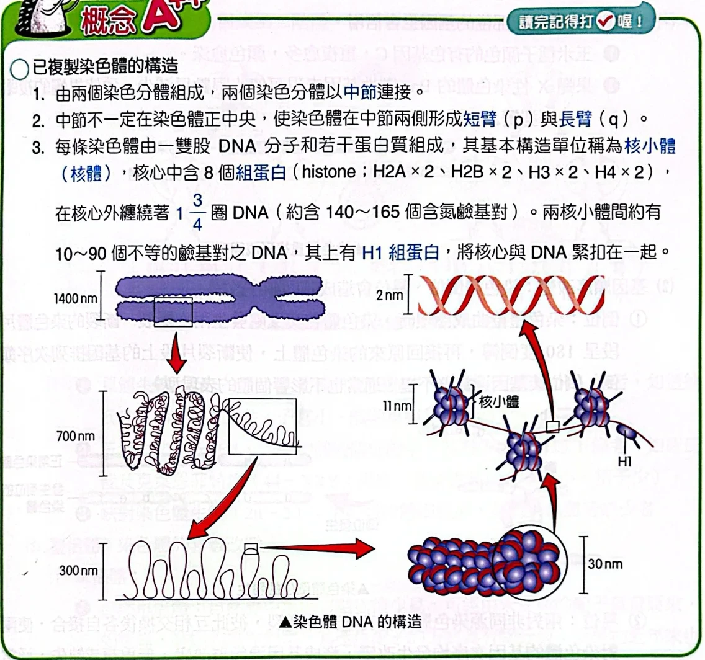
原來是層層包裝，才塞得進細胞核。核心八個組蛋白和外面的 H1 要分開記，不能把 H1 算進核心。
換你：已複製、有兩條姐妹染色分體的一條染色體，含幾個 DNA 分子？
兩個雙股 DNA 分子。因為複製後每條染色分體各含一個 DNA 分子，「雙股」本身不代表兩個分子。
缺失與重複：少一段、多一段會怎樣？
把正常排列寫成 A B C ● D E F，● 代表中節。若變成 A B C ● E F，你先看到什麼？高能輻射線、化學物質或病毒等，都可能讓染色體斷裂後接錯。
D 不見了，是缺失。可是減數分裂配對時，少掉的地方應該只是空著，為什麼會看到圈環？
同源染色體要一對一配對，正常那條的 D 找不到對應片段，就拱成圈環。缺失讓基因數目變少，其餘順序和連鎖群不變。連鎖群先想成在同一條染色體上的基因。
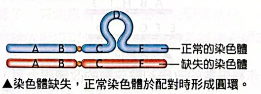
所以圈環不是憑空多出基因，是配對時有一段找不到搭檔。缺失也可能影響身體表現吧？
第 5 號短臂缺失會造成貓叫症：兩眼間距大、智力發展遲緩、耳朵變形。喉頭及聲帶發育不全，使嬰兒哭聲像貓叫。第 11 號染色體缺失則可能有智能障礙、腎臟癌，有的甚至沒有虹膜。
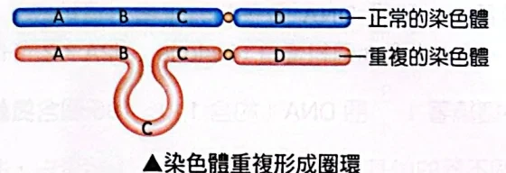
重複就是 A B C C ● D E F，基因數目變多，多了一段，但連鎖群不變。那基因多，構造也一定變大嗎？
不能這樣推：玉米有色基因 C 重複愈多，產物愈多，種子顏色愈深。果蠅 X 染色體的 Bar 片段重複，卻使小眼數目減少，複眼由橢圓變成狹縫形的棒眼。缺失通常比重複嚴重，因為少掉的基因無法製造必要蛋白質。
我得看缺的是什麼、多的是什麼，不能說重複一定讓構造變大。圈環可提示缺失或重複，但倒位配對也可能有圈環，不能直接認成互換。
換你：缺失的同源染色體配對時，拱成圈環的是缺失那條，還是保留該片段的那條？
是保留該片段的那條。因為另一條已缺少對應片段，保留的這一段無處配對，才拱成圈環。
倒位與易位：順序變了，基因搬家了嗎？
一段基因倒過來接回原處，和搬到另一條染色體，差在哪裡？先看倒位：染色體捲成圈，交叉處斷兩次，中間片段轉 180° 再接回。
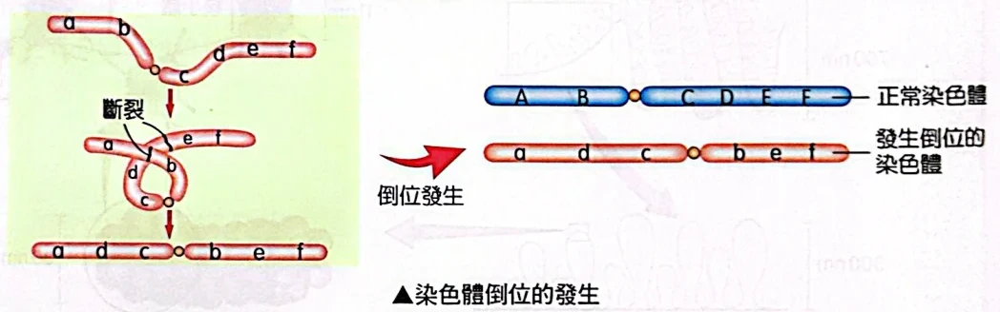
順序換了，連鎖群也換了吧？感覺原本的排列被打亂了。
連鎖群看基因是否仍在同一條染色體，不是看先後順序。倒位沒有增減基因，連鎖群也不變，通常不影響表現型。易位則是兩條非同源染色體各斷一段，再互相交換接上。
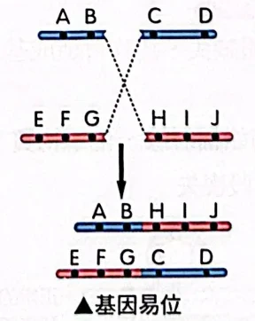
易位真的換了所在染色體，所以順序和連鎖群都變。正文這種互相交換、沒有缺失或重複的情形，基因數目不變，表現型通常也不變。
對，但易位別和互換混淆：易位發生在非同源染色體，前面學的互換發生在同源染色體。倒位或易位者本人通常正常，產生配子時卻可能出問題。子代就可能出現缺失或重複。
所以「本人通常正常」不等於配子都正常。判斷時先看有沒有換到非同源染色體，再看基因有沒有增減。
換你：倒位改變基因順序，為什麼連鎖群仍不變？
因為倒轉的片段仍接在同一條染色體上，基因沒有搬到別條染色體，所以連鎖群不變。
非整倍體：少一條、多一條從哪裡來？
若染色體數目改了，你會先問「改一條」，還是「改整套」？非整倍體是一套中一條或數條改變；整倍體則是整套改變。兩種不能只看「變多了」就混在一起。
所以某一對多一條，和每一種都多一套不一樣。少一條、多一條，是分裂時分錯了嗎？
對，減數分裂第一階段同源染色體沒分開，或第二階段姐妹染色分體沒分開，都叫無分離。第 21 號與性染色體較常發生。先看是哪個階段，再追四個配子的結果。
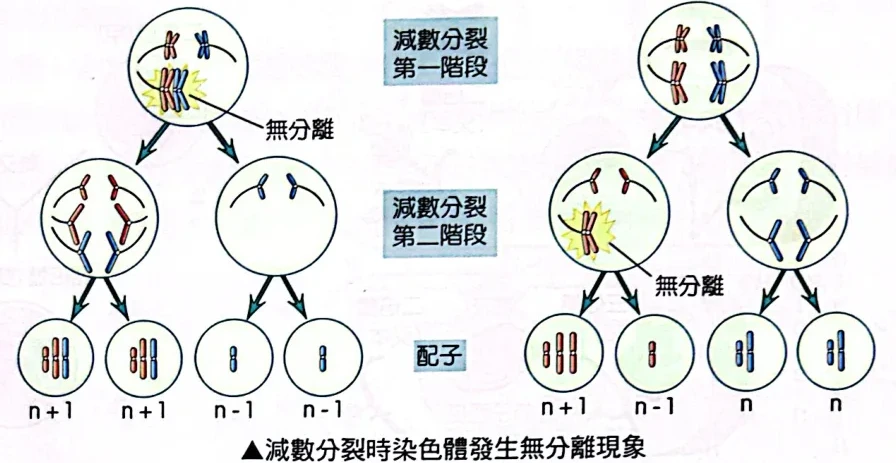
第一階段一對一起跑到同一邊，後面兩個細胞都錯。四個配子就成了 n＋1、n＋1、n−1、n−1，全部異常。
第二階段若只有一個細胞的姐妹染色分體沒分開，就得到 n＋1、n−1、n、n，一半異常。把個體的數目分類再分開看：
| 種類 | 數目與例子 |
|---|---|
| 單體 | 2n−1，某對少一條；透納氏症 44＋X，女性，子宮小、無卵巢與月經週期 |
| 三體 | 2n＋1，某對多一條；唐氏症第 21 號三條，克萊恩菲特症 44＋XXY |
| 缺對 | 2n−2，同一對的兩條都少 |
三體是某一對變三條，不是三套。可是 XXY 有兩個 X，我差點把克萊恩菲特症判成女性。
依正文這些核型，判斷性別要看Y，不是數 X。正常男是 44＋XY、正常女是 44＋XX；XXY 是男性，可能有女性乳房、睪丸小、精子少。44＋X 沒有 Y，透納氏症是女性。
我先把常染色體數和性染色體分開讀。再記第一階段全錯、第二階段一半錯，不能記反。
換你：四個配子為 n＋1、n−1、n、n，符合哪一階段的無分離？
第二階段。因為只有一個細胞的姐妹染色分體沒分開，另一個細胞仍形成兩個正常配子。
整倍體：三倍體為什麼容易無子？
若改變的是整套染色體，就來看整倍體。單倍體只有一套，多倍體則有三套以上，例如 3n、4n。你覺得只有一套的雄蜂，產生配子還能再減半嗎？
不能吧，已經只有一套了。正文列的自然單倍體例子有雄蜂、雄蟻，還有細菌。
雄蜂、雄蟻可由未受精的配子發育，產生配子靠有絲分裂。另外，植物的變異單倍體個體小、抵抗力弱，通常不孕。別把自然單倍體和變異單倍體的表現混為一談。
多倍體較常見於植物，正文舉無子西瓜和新世界棉。那三套不是比兩套更多，為什麼反而不容易生出種子？
奇數倍多倍體在減數分裂時，每種染色體有三條這類奇數，難以兩兩配對。配子不易存活，所以不結種子，這類不孕植株只能靠營養器官繁殖。染色體都來自同一物種叫同源多倍體，三倍體無子西瓜就是例子。
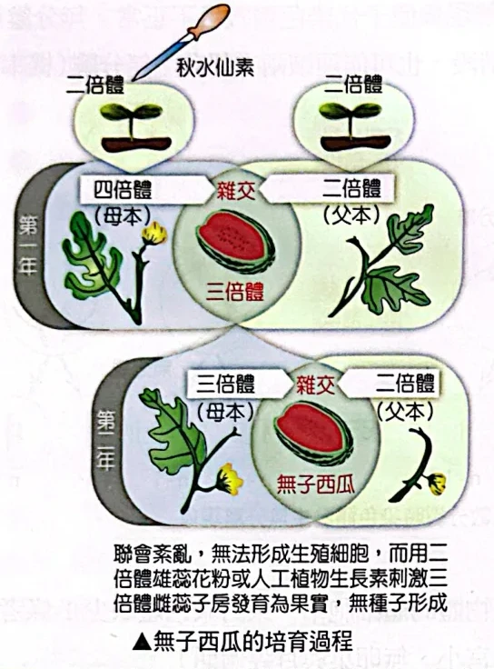
等一下，無子西瓜不是有三倍體種子可以種？是不是製造種子和三倍體自己結種子，要分成兩件事？
對，先在二倍體幼苗滴秋水仙素，阻止紡錘絲形成，使染色體複製後細胞沒分裂，變四倍體。第一年用四倍體當母株，配子 2n，和二倍體父株的 n 配子結合。得到的種子是 2n＋n＝3n，種子由這次雜交取得。
第二年才把三倍體種下，它聯會紊亂，無法做出正常配子。用二倍體花粉或植物生長素刺激子房長成果實，就得到無種子的西瓜。
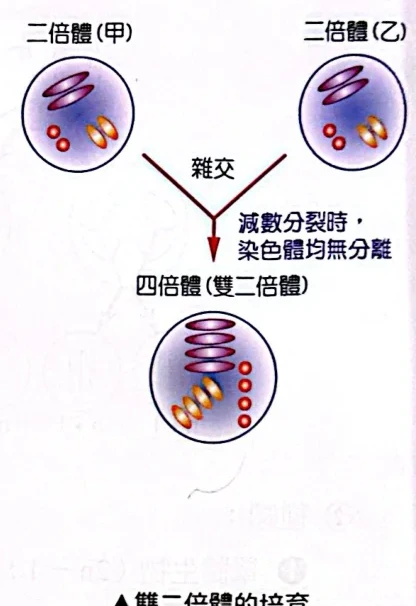
來源若是不同物種，就叫異源多倍體。新世界棉由舊世界棉和美洲棉雜交而來，是 2n＋2n 的雙二倍體。共 26 對染色體，兩個來源各占 13 對。
所以同源、異源是在分物種來源；單倍、三倍、四倍是在數套數。無子西瓜的重點是三套難以配對，不能誤判成一個基因的點突變。
換你：四倍體母株和二倍體父株雜交，為什麼能得到三倍體種子？
因為四倍體母株提供 2n 配子，二倍體父株提供 n 配子，結合後成為 3n；這和三倍體植株自己形成正常配子是不同的事。
點突變：一個鹼基變了，蛋白質一定變嗎？
把尺度縮到基因，DNA 鹼基對可被取代、插入或刪除。單一核苷酸對改變叫點突變。你覺得改一個鹼基，胺基酸一定跟著變嗎？
我會想一定變，因為 DNA 決定蛋白質。但之前的密碼表，好像不同密碼子也可能對應同一種胺基酸。
對，先看原本 mRNA：AUG AAG UUU GGC UAA，產物是 Met Lys Phe Gly，接著終止。若 GGC 變 GGU，仍對應 Gly，叫同義突變。這是密碼重複性，不代表 DNA 沒改。
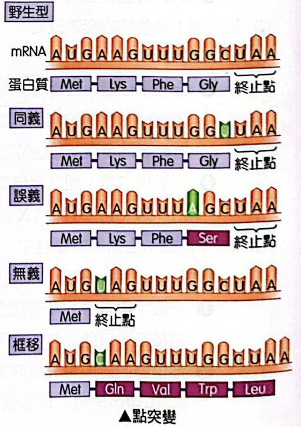
所以先看密碼表，不能只看字母不同。如果 GGC 換成 AGC，Gly 就變成 Ser 了。
那叫誤義突變，換了胺基酸，可能大幅改變蛋白質活性。若原本 AAG 變成 UAG，轉譯在 Met 後就停止，叫無義突變。提早出現終止密碼子，會讓蛋白質太短、無功能。
一個是換了成員，一個是太早停工。那插入一個鹼基，應該也只會多一個胺基酸吧？
讀碼是每三個一組，插入一個會造成框移，後面整個分組都錯位。原序列插入 C 後成 AUG CAA GUU UGG CUA A，讀成 Met Gln Val Trp Leu。插入或刪除若是三的倍數，則不框移，只多或少幾個胺基酸。
我懂了，插入一個不是多一整組，而是把後面的分組全推歪。插入或刪除通常比取代嚴重，因為可能牽動後面整段。
正文的真實例子是鐮形血球貧血症：血紅素 β 次單元基因發生誤義突變。第六個胺基酸由麩胺酸 Glu 變成纈胺酸 Val，密碼子 GAG 變 GUG。通常嚴重程度是框移約等於無義，大於誤義，再大於不影響胺基酸的同義。
解題時先把 DNA 換成 mRNA，再對準讀框、逐一查表。不能只看到一個字母變，就直接決定嚴重程度。
換你：插入三個鹼基和插入一個鹼基，對讀框的影響有何不同？
插入三個不會框移，插入一個會框移。因為密碼子以三個鹼基為一組，非三的倍數會使後面的分組錯位。
突變來源：出錯、受損和修補
沒有受到外來物質影響，DNA 也可能突變嗎？先想想複製、修補、重組這些過程，會不會出錯。
會，所以不是所有突變都是輻射造成的。這些過程出錯，造成鹼基取代、插入或刪除，就是自發突變。
外來因子造成的是誘導突變，分物理、化學、生物。物理因子有紫外線、X 射線、γ 射線，可使 DNA 斷裂或形成不正常鍵結。紫外線可讓相鄰 T 接成胸腺嘧啶二聚物，使 DNA 扭曲。
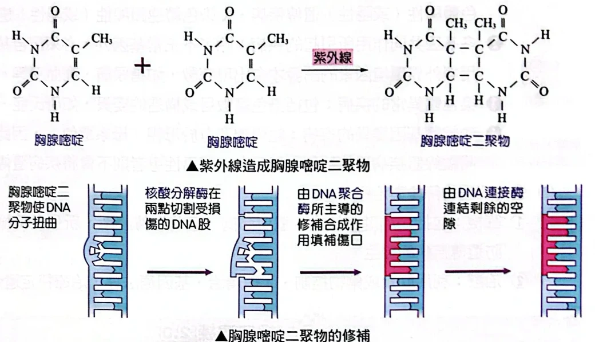
細胞不是只能放著不管，而是可以切除型修補。核酸分解酶切掉受損段，DNA 聚合酶補上，DNA 連接酶接好，和前面複製用的是同一群酵素。
化學因子有亞硝酸、五溴脲嘧啶。亞硝酸使 C 失去胺基變 U，U 會配 A，複製後原本 G–C 對就變成 A–T 對。要把「鹼基先改變」和「複製後配對改變」接起來想。
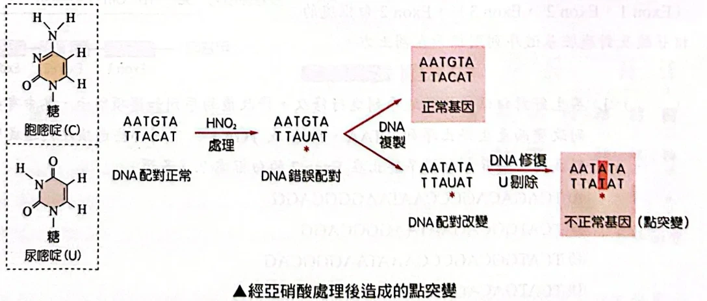
生物因子則是病毒，可以把基因嵌入宿主 DNA，或讓宿主基因不正常活化。正文提到，人類約 15% 的癌症由病毒引起。
大部分基因突變有害甚至致死，偶爾有利，好壞還得看生活環境。突變提供演化的原料，卻不能決定演化方向。決定方向的是天擇。
所以不能說生物需要什麼，就突變成什麼。先有變異原料，哪些在環境中有利，再由天擇決定方向。
換你：切除型修補時，DNA 聚合酶和 DNA 連接酶各做什麼？
DNA 聚合酶補上 DNA，DNA 連接酶把缺口接好。因為受損片段先被切除，接著需要補回序列並完成連接。
遺傳疾病：原因不只一種
看到「遺傳疾病」，能直接想成只有一個基因壞掉嗎？你試著把前面染色體變異也放進來想。
不行，唐氏症是染色體數目異常，貓叫症是構造異常。它們不能都當成一個鹼基改變。
單一基因缺陷有血友病、色盲，可依體染色體或 X 染色體、顯性或隱性分類。糖尿病、高血壓則是多基因加環境，多個基因累加，再加環境誘發。還有粒線體基因變異，不能漏掉。
正文說受精卵的粒線體只來自卵，所以是母系遺傳。患病母親傳給每個子女，患病父親不傳，不能只因為媽媽傳就當成 X 性聯遺傳。
再分清篩檢和治療：婚前健康檢查、遺傳諮詢、產前遺傳診斷、新生兒篩檢，屬於正文的預防與篩檢措施。治療方式包括飲食或藥物控制、手術矯治，以及基因療法。
我先分疾病來源，再看是在篩檢還是治療。不是每種遺傳疾病都用同一種方式處理。
換你：依正文，粒線體基因變異為什麼呈現母系遺傳？
因為受精卵的粒線體只來自卵，所以正文列出患病母親傳給子女、患病父親不傳的母系遺傳方式。
外顯子題組：先對準讀框再看變化
接著的題組給一個有三個外顯子的甲基因，並標出 Exon 2 白框的序列與胺基酸。碰到這種長序列，你會先整串找看起來像終止的字樣嗎？
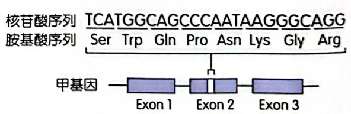
我可能會，但這樣會忘記每三個才是一組。應該先用圖上對應的胺基酸確認讀框。
對，再分辨改動屬於取代、插入或刪除。比較前後每組密碼子，才能判斷同義、誤義、提早終止或框移。尤其插入、刪除要先看是不是三的倍數。
所以先處理分組，再看胺基酸怎麼變。不能因為整串某處出現幾個眼熟字母，就跳過讀框下結論。
換你：判斷序列改變後的蛋白質結果，為什麼要先對準讀框？
因為轉譯按每三個鹼基一組判讀，分組位置不同，得到的密碼子就不同，必須先對準才能比較胺基酸或終止位置。
非侵入式產前檢驗：片段多，代表什麼？
這組 NIPT 題目說母血裡有胎兒的游離 DNA，叫 cfDNA，是細胞破碎後進入血液的短片段。MPSS 大量定序，再搭配人體基因解碼資料比對。你覺得接著要數什麼？
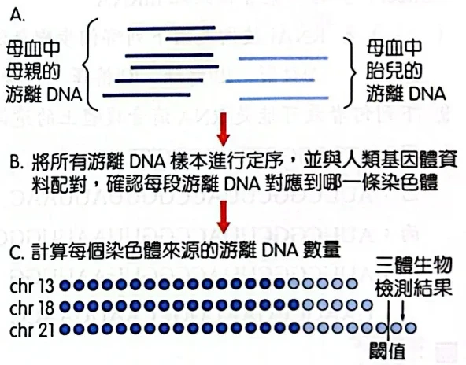
要數每條染色體對應到多少片段。如果第 21 號的片段比其他染色體多，就是整套變三倍了嗎？
這是在提示第 21 號染色體較多，對應的是三體，不是三倍體。題幹也說可了解染色體數量、結構或基因異常，其他染色體數量異常也可用同樣思路檢驗。限制是不能分辨片段屬於母體還是胎兒，只能判斷來自哪條染色體。
所以讀這類題要抓「定序、比對、計數」，也要保留它的限制。題幹說與核型檢查確診相符高達 98%，我不能把這個數字讀成完全沒有誤差。
換你：依題幹，MPSS 比對後能知道 cfDNA 來自哪條染色體，能同時知道屬於母體或胎兒嗎？
不能。因為題幹明確指出這個方法只能判斷片段屬於哪條染色體，無法區分該片段來自母體或胎兒。
RNA 干擾：追蹤被處理的是哪個分子
最後一組想研究基因功能，思路是拿掉某基因的作用，觀察少了它會怎樣，再反推正常功能。題幹介紹用雙股 RNA 干擾基因表現的RNAi。看到「關閉基因」，你會直接想成 DNA 被剪掉嗎？
我會差點這樣想，但應該先追它實際處理哪個分子。這裡一開始給的是雙股 RNA。
真核細胞中的切丁器 Dicer 把長雙股 RNA 切成約 22 個核苷酸的siRNA。雙股解開，其中一股裝進蛋白質複合體，形成 RNA 消音複體。siRNA 與互補 mRNA 配對後，切片器 Slicer 摧毀該 mRNA。
所以我得沿著「雙股 RNA、短 siRNA、解開裝入一股、找互補 mRNA」往下看。被摧毀的是 mRNA，不能把題幹寫的基因關閉直接當成刪除 DNA。
換你：裝進 RNA 消音複體的是雙股 siRNA，還是解開後的其中一股？
是解開後的其中一股。因為題幹說雙股 siRNA 先解開，只有一股裝入蛋白質複合體，再靠互補序列配對 mRNA。
把容易混的線索重新分清楚
最後把線索串回來：圈環先想缺失、重複，也留意倒位；連鎖群改變要想到非同源染色體的易位。n＋1、n−1 要追無分離階段，XXY 和 X 要看有沒有 Y。3n 無子要想套數和配對，一個鹼基變了則先轉 mRNA、對讀框，母傳子女還要留意粒線體。
我會先分尺度，再問基因增減、順序、所在染色體或整套數目哪個改了。插入或刪除一個會把後面讀框推歪，不能只算錯一個胺基酸。下一篇再接人類如何用分子知識複製、剪接和轉殖基因。
換你：「某對染色體多一條」和「整套變成三套」，分別是什麼？
前者是非整倍體中的三體，2n＋1；後者是整倍體中的三倍體，3n。因為前者只改變某一對的條數，後者改變的是整套數目。
4-5 生物科技：PCR、重組 DNA 與基因轉殖
先想清楚：複製 DNA 要準備什麼
假設要把一段 DNA 複製很多份，你會先準備什麼？先把它想成照著原稿抄寫。
要有原稿，還要有材料。DNA 聚合酶應該能直接開始抄吧？
原稿就是模版 DNA，本篇想複製的部分叫目標基因。聚合酶不能從零開始，需要引子提供起點，才能把核苷酸接到 3′ 端。
所以不是只放聚合酶就好。還要有模版、引子，以及拿來接成新股的原料。
原料是 dATP、dGTP、dCTP、dTTP，同時提供原料與能量。這篇有三件事：基因放大是複製很多份，重組 DNA 是把目標基因接進載體。基因轉殖則是送進細胞或生物體，讓它表現新性狀。
我先分清楚目的：放大是增加份數，重組是接在一起，轉殖是送進去。接下來再看每一步用什麼工具。
換你：DNA 聚合酶為什麼不能只靠模版就開始複製？
還需要引子，因為 DNA 聚合酶不能從零開始，必須從已有的起點把核苷酸接到 3′ 端。
在細菌裡放大基因
要增加 DNA 的份數，一定得在試管裡操作嗎？如果能讓細菌幫忙複製呢？
也可以在活體裡做？可是放進細菌的基因，要接到哪裡？
基因放大技術能快速、大量複製一段 DNA，可在活體或試管內進行。活體的方法，是把目標基因接到質體上；質體是細菌中獨立於染色體外的小環狀 DNA。質體能自行複製，加上細菌分裂快，目標基因就跟著大量增加。
所以質體不是細菌的染色體。把基因接上去後，就能利用質體複製和細菌繁殖來增加份數。
換你：為什麼把目標基因接到質體上，能在細菌裡大量複製？
因為質體能在細菌體內自行複製，細菌又分裂得快，接在質體上的目標基因就會跟著大量複製。
PCR：用溫度控制複製
1987 年，穆勒斯發展出聚合酶連鎖反應（PCR），在試管中大量複製特定 DNA 片段。試管裡沒有解旋酶，你覺得怎麼拆開雙股？
用加熱拆開？那一般的 DNA 聚合酶也一起加熱，還能工作嗎？
一般聚合酶遇熱會失去活性，所以改用耐高溫的 DNA 聚合酶，例如 Taq。材料還包括模版 DNA、人工合成的 DNA 引子，以及四種核苷酸原料。PCR 不用解旋酶，也不用連接酶；細胞內複製用的則是 RNA 引子。
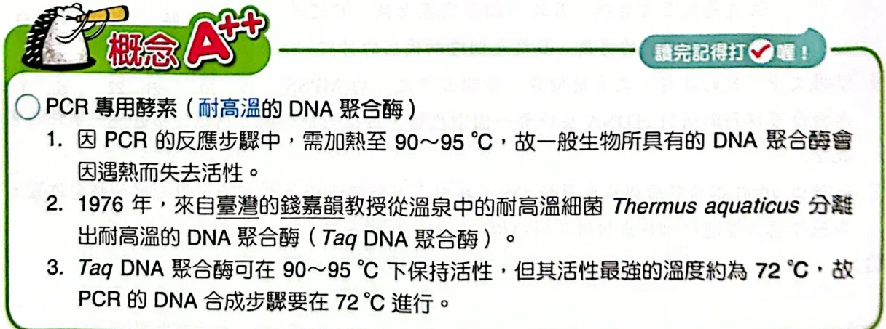
PCR 用的是 DNA 引子，不是 RNA 引子。我還得記住：拆雙股靠加熱，延長新股才靠聚合酶。
一輪有三步，先看每個溫度的工作。
冷卻時引子短、量多，比長股先配上；延伸方向是5′→3′。
| 步驟 | 溫度與原因 |
|---|---|
| 變性 | 約 90 °C，鹼基間氫鍵斷裂，雙股分開 |
| 黏合 | 約 60 °C，氫鍵重新形成，一對引子分別配到兩條單股 |
| 延伸 | 約 70 °C，Taq 最適為 72 °C，從引子延長新股 |
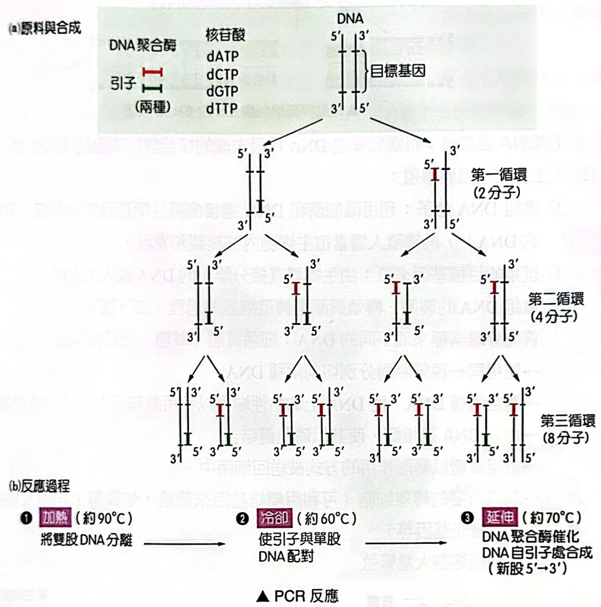
順序是 90 拆、60 黏、72 長，溫度高低則是變性大於延伸、大於黏合。是不是每輪只增加一份，所以做幾輪就加幾份？
是每輪加倍，所以 1→2→4→8，做 n 輪理論上是原來的 2ⁿ 倍。10 輪是 2¹⁰，約 1000 倍，不是 2n 或 n²。至於複製哪一段，由兩個引子夾住的範圍決定。
我懂了：引子決定放大的範圍，溫度讓三步反覆進行。份數每輪乘二，才會快速變多。
換你：PCR 的黏合溫度比延伸溫度低，兩步各在做什麼？
黏合約在 60 °C，讓引子與模版配對；延伸約在 70～72 °C，讓 Taq 延長新股。因為降溫有利氫鍵重新形成，而 Taq 在 72 °C 活性最強。
限制酶剪，連接酶接
如果要把兩段 DNA 接在一起，能隨便找個地方剪嗎？你覺得限制酶怎麼決定切點？
限制酶像剪刀，應該哪裡都能剪？剪完兩端黏起來，就算接好了吧？
限制酶會辨識特定核苷酸序列，細菌也用它切碎入侵的病毒 DNA 來保護自己。辨識序列有對稱性，意思是兩股各自從 5′ 端讀，讀到的序列一樣。EcoRI辨識 5′-GAATTC-3′，在 G 與 A 之間切。
這一股的互補股是 3′-CTTAAG-5′，從它的 5′ 端讀也是 GAATTC。切點錯開會留下單股 AATT，叫黏性端；用同一種限制酶切兩種 DNA，互補末端能靠氫鍵配對。還要DNA 連接酶形成磷酸二酯鍵才接牢，它也是複製時接岡崎片段的酵素。
所以對稱要照各自的 5′ 方向讀，不能兩股都硬從左讀。黏性端的氫鍵只是先黏住，連接酶才負責接牢。
對，判斷序列時也能先寫出互補股，再從它的 5′ 端讀回來比較。限制酶負責辨識與切割，連接酶負責把相鄰 DNA 末端接起來。
換你：兩段 DNA 的黏性端已經配對，為什麼還要加連接酶？
因為黏性端只是靠氫鍵暫時黏住，還需要 DNA 連接酶形成磷酸二酯鍵，把相鄰的 DNA 末端接牢。
重組 DNA：從剪接到篩出細菌
現在要讓細菌幫忙複製目標基因，你會怎麼把基因接進質體？除了接好，還有什麼事要做？
把基因和質體剪開、接起來，再倒進細菌裡？這樣每個細菌應該都拿得到吧？
重組 DNA 分子是把目標基因接進載體，再送入宿主細胞複製和表現。載體可以是質體或病毒的 DNA，目標基因可以直接從生物體分離，也可以人工合成。先分離質體與目標基因，再用同一種限制酶分別切割，才有互補的黏性端。
接著混合，讓黏性端以鹼基配對形成氫鍵，使目標基因嵌入質體缺口，再加連接酶接牢。重組質體以轉形作用送回細菌，也就是細菌吸收外界 DNA。之後還要用標誌基因認出哪些細菌拿到質體，不能假設每個都拿到。
所以轉形後還沒結束。標誌基因像辨認記號，是拿來認出有沒有吸收質體的細菌。
常見標誌有抗生素抗性基因或螢光基因；若質體帶有對應的抗性基因，就能用含抗生素的培養基篩選。把篩出的細菌大量繁殖，目標基因複本也增加，就是活體基因放大。目標基因能在細菌中表現，則與遺傳密碼的普遍性有關。
但真核基因有內含子，細菌不會剪接。遇到這個問題，常改用人工合成或沒有內含子的版本。
我會一路檢查：同一種酶切、配對、連接酶接牢、轉形、篩選，最後才大量培養。能送進去和能正確表現，也都要考慮。
換你：重組質體送回細菌後，標誌基因負責什麼？
負責辨認哪些細菌拿到了質體，因為轉形後不能直接假設所有細菌都吸收了質體，需要篩選後再大量培養。
基因轉殖：送進植物與動物的方法
只要用科技讓生物出現改變，就能叫基因轉殖嗎？例如體外受精，算不算？
有在實驗室操作，應該就算？跟傳統育種感覺都在改變後代。
基因轉殖技術是用基因工程把遺傳物質送進活細胞或生物體，產生基因改造。傳統育種、雜交、誘變、體外受精，都不算這裡的基因轉殖。細胞融合、原生質融合、體細胞變異、染色體倍增也不算，因為都沒有把特定外源基因放進去。
要看有沒有導入特定外源基因，不能只看是不是用了科技。細菌就是前面用重組質體轉形，再表現出目標基因的性狀。
植物可以用農桿菌的Ti 質體，把目標基因接進T-DNA；T-DNA 容易嵌入植物染色體。導入成功後，再以組織培養把單一細胞養成整株植物。
另一種方法是基因槍，把包著 DNA 的金屬顆粒射進植物細胞。植物轉殖較容易，與細胞的全能性有關，一個成功轉殖的細胞就能組織培養成整株。
植物可以先讓一個細胞成功，再培養成整株。動物也只要在長大後隨便找一個細胞注射嗎？
動物要在受精卵或早期胚胎階段導入，後續細胞由此分裂而來，才有機會讓全身細胞都帶新基因。1981 年的轉殖鼠使用顯微注射，把基因注入受精卵的細胞核。圖中接著把受精卵放回代孕母鼠。
動物也能以病毒 DNA 當載體，感染胚胎細胞，或使用電穿孔。比較方法時，要一起看送入方式、送入對象和發育階段。
所以植物可用 Ti 質體或基因槍，再靠組織培養。動物的方法有顯微注射、病毒載體與電穿孔，而且導入時機要早。
換你：為什麼植物轉殖成功後，可以從單一細胞培養成整株？
因為植物細胞具有全能性，轉殖成功的細胞能透過組織培養發育成整株植物。
安全評估與人類基因體計畫
做出基因改造產品後，能只檢查有沒有出現想要的性狀嗎？你覺得還要評估什麼？
至少要看人吃了會不會影響健康。環境也要看嗎？
要，正文列出兩方面：會不會干擾人體代謝、影響健康，以及會不會衝擊環境生態。講義列出的把關單位是國科會、農業部、衛生福利部。原掃描缺少印刷第 142～143 頁，這裡只接現有第 144 頁的內容，不猜缺頁細節。
所以安全評估要同時看人體與環境。接下來的人類基因體計畫，是把人體所有 DNA 都當成基因來研究嗎？
基因體指生物體內單套完整的 DNA 序列，不是把每段 DNA 都叫基因。人類基因體計畫簡稱 HGP，目標包括繪製遺傳圖譜與物理圖譜、定出基因體序列。還要找出未知基因，進行基因命名與功能分析。
它不只是把序列讀出來，還要找基因、了解功能。那研究規模有多大？
講義列出約30 億個鹼基對，也就是 3×10⁹，由 18 國參與，包括美、英、德、法、日、中國等。依本篇資料，2003 年底大部分定序完成，人類基因約 20000～25000 個。因此大部分 DNA 不是編碼蛋白質的基因，不能把鹼基對數當成基因數。
30 億是在數鹼基對，兩萬多才是在數基因。知道這些序列之後，能拿來做什麼？
能加速醫學與生技發展，了解疾病成因，協助新藥與療法開發；前一節的非侵入式產前檢驗，也靠 HGP 資料把 DNA 片段對回染色體。爭議則涉及倫理、法律與社會問題，例如任意製造人類胚胎、產前性別篩檢後終止懷孕。還有個人基因資料保密，不能只看技術帶來的好處。
我會把它分成目標、規模、用途與爭議來讀。基因體是單套完整序列，基因只是其中要辨認與分析的部分。
換你：人類有約 30 億個鹼基對，是否代表有 30 億個基因？
不是，因為鹼基對數和基因數不同；本篇列出人類約有 20000～25000 個基因，大部分 DNA 不是編碼蛋白質的基因。
PCR 題組：先看圖上的變化
看到 PCR 圖上標甲、乙、丙，你會直接背字母順序嗎？還是先看每一步前後發生什麼？
我容易照圖上先後排溫度，想成越往後越熱。看到重複加熱的箭頭，也可能當成延伸的溫度。
先用變化認步驟：雙股拆開是變性，引子配上是黏合，新股變長是延伸，之後才配溫度。遇到循環次數題，就用2ⁿ表示放大倍數；問至少幾輪，要讓它大於或等於目標。材料題則回到模版、DNA 引子、原料與能量、耐熱聚合酶，別加進解旋酶或連接酶。
我先辨認圖中的動作，再談溫度和材料。算至少幾輪時，也要檢查有沒有真的達到要求，不能只看差不多。
換你：圖中若出現「雙股 DNA 變成兩條單股」，應先判成哪一步？
判成加熱變性，因為高溫使兩股鹼基間的氫鍵斷裂，讓雙股分開。
試管嬰兒題組：分清楚放大、篩選與轉殖
題組把試管嬰兒、全基因體放大術和移植放在一起，你會先做什麼？如果沒有放入外源基因，能叫基因轉殖嗎？
我可能看到基因檢測就選轉殖。應該先看技術到底是在複製 DNA、檢查條件，還是放入基因。
這對夫婦都帶有地中海貧血症基因，本身不發病，每胎患病機率是四分之一；他們希望孩子健康，也符合幫哥哥移植的條件。先讓精卵在體外結合，再用全基因體放大術（WGA）反覆檢測多個基因，各檢測不互相干擾。接著挑出未患地中海貧血症、且 HLA 與哥哥相符的受精卵，植回母親子宮發育。
所以是在既有受精卵中找符合條件的，沒有把特定外源基因放進去。試管嬰兒也不是一直住在試管裡，後來是在子宮發育。
題組還說懷孕 11 週時做絨毛膜採樣，再次確認健康狀況與 HLA 吻合，出生後才捐臍帶血移植給哥哥。讀題要分清楚「讓父母生下健康孩子」與「出生後幫助哥哥」兩個目的。遇到機率敘述，也先看問的是所有胎兒，還是已經篩選過的健康孩子。
我會照先後整理：體外受精、檢測篩選、植回子宮、再確認，最後才是出生後的移植。不能因為都在同一篇新聞，就把每項技術當成同一個用途。
換你：用 WGA 檢測後挑出合適受精卵，是否等於進行基因轉殖？
不等於，因為這裡是放大 DNA、檢測與篩選受精卵，沒有把特定外源基因放進去。
限制酶與親子鑑定：找完整證據
限制酶題組會比較正常人與患者的 p53 基因部分區域。如果辨識序列發生變化，你會先檢查什麼？
限制酶是不是還會在原來的位置切？親子鑑定只要找到幾條相同的條帶，也能先下結論吧？
限制酶要認得特定序列；突變若破壞辨識序列，就不會在那裡切，不能只記原本的位置。親子鑑定則先找孩子與母親共有的條帶，再檢查其餘是否都能在生父找到。只比對幾條就下結論，會漏掉不符合的證據。
切割題先查序列是否還被認得，再判斷片段。親子鑑定要把剩下的條帶全部查完，不能只挑相同的看。
換你：限制酶原本能切的位置，為什麼突變後可能不能切？
因為限制酶只辨識特定序列；若突變破壞了辨識序列，限制酶就認不得，不能在該位置切割。
DNA 粗萃取：每種藥劑各做一件事
從奇異果汁取出 DNA，為什麼要依序加不同藥劑？洗碗精、鹽、鳳梨汁和酒精，都是拿來破膜的嗎？
我容易把藥劑都記成「把細胞弄破」。鳳梨汁裡的蛋白酶，是不是也在破膜？
洗碗精的界面活性劑，例如十二烷基硫酸鈉，破壞脂質構成的細胞膜與核膜，釋出染色體。攪拌後加入5 M NaCl，使組蛋白與 Cl⁻ 結合而離開 DNA。此時 DNA 的磷酸基帶負電、彼此排斥，不易凝聚，仍溶在溶液中。
再加鮮榨鳳梨汁，利用其中的蛋白酶分解蛋白質，並以紗布過濾殘渣。接著沿杯壁緩慢加入95% 冰酒精；DNA 不溶於酒精，會在酒精與水的交界處析出白色雲狀物。最後用吸管吸起。
所以蛋白酶是去蛋白，洗碗精才負責破壞脂質膜。鹽那一步讓 DNA 留在溶液，後來才用冰酒精讓它析出。
對，別只背藥劑名稱，要能說出目的。把「界面活性劑破膜、鹽處理後 DNA 溶解、蛋白酶去蛋白、酒精析出」連起來，才不會互換作用。
換你：加入冰酒精後，為什麼會在交界處看到白色雲狀物？
那是析出的 DNA，因為 DNA 不溶於酒精，沿杯壁慢慢加入冰酒精後，會在酒精與水的交界處析出。
PCR 與電泳操作：知道每一步為什麼
萃取後進行 PCR，為什麼混好反應液還要離心、加礦物油？這兩步是在幫 DNA 配對嗎？
應該不是配對，但我只記得照做。離心和加油各有什麼目的？
用微量滴管加入藥劑與樣本後，離心機快轉10 秒，讓反應液沉到微量試管尖端。再在液面加入約50 μL 礦物油，防止加熱時水分蒸發。這些是操作準備，接著才進行溫度循環。
本活動先以 90 °C 變性 1 分鐘，再讓引子黏合 1 分鐘，接著以 72 °C 延長，共做 20～30 循環。引子 GC 比例＜50% 時，黏合用約 55 °C；＞50% 時，用約 60 °C。因為GC 對有 3 個氫鍵，GC 多的引子黏得牢，可以用較高溫度。
所以黏合溫度要配合引子的 GC 比例，不是每次都固定一樣。做完 PCR 後，要怎麼用電泳比較 DNA 片段？
用1.5% 洋菜糖膠片，將樣本與已知長度的標準品各自混合承載緩衝液，加入小槽，再接電源。緩衝液中的甘油讓樣本沉入槽中，溴酚藍則用來追蹤跑到哪裡。兩種成分的工作不同。
DNA 要往正極走，所以我把樣本槽放在正極那端？這樣是不是比較近？
樣本槽要放在負極端，DNA 才會往正極跑進膠片，因為它有許多帶負電的磷酸基。膠片像篩網，大分子較難穿過，所以短片段跑得快、離起點遠，長片段跑得慢。再和已知長度的標準品比較，才判斷片段長度。
觀察時讓膠片泡溴化乙錠（EtBr），它會和 DNA 結合。用紫外光照射後發出螢光，就能觀察 DNA 的位置。
我會把方向、速度、觀察分開記：負極上樣，往正極跑，短的跑較遠。甘油讓樣本下沉，溴酚藍追蹤移動，EtBr 配合紫外光觀察 DNA。
換你：DNA 電泳的樣本槽應放在哪一極？同樣條件下，短片段會離起點較近還是較遠？
樣本槽放負極端，短片段離起點較遠。因為 DNA 帶負電而往正極移動，短片段又較容易穿過膠片，所以跑得較快、較遠。
探討活動演練：先看當下的材料
如果題組從 RNA 病毒開始，最後卻要用 DNA 聚合酶反應，你會怎麼檢查步驟順序？先想每一步拿到的是什麼。
我可能看到「聚合酶」就先做放大。可是材料還是 RNA，應該先處理成 DNA？
先分清楚取出材料、去掉蛋白質、酒精沉澱核酸，各步的目的，不能把藥劑作用互換。題組列有RNA 轉為 DNA，要先完成這一步，再接 DNA 聚合酶反應、純化 DNA、分析序列。若起始遺傳物質本來就是 DNA，就不需要 RNA 轉 DNA 這一步。
我每走一步都問：現在手上是什麼，下一步需要什麼。萃取題看藥劑的作用，流程題看材料有沒有先準備好。
換你：流程若改從 DNA 病毒開始，哪個材料轉換步驟不再需要？
不再需要將 RNA 轉為 DNA，因為起始遺傳物質本來就是 DNA，可以省去這項轉換。
把整篇連起來：從複製到判讀
最後用題目線索串一次：看到三種溫度、限制酶、重組流程或電泳條帶，你各會先想什麼？
三溫度先認出拆、黏、長，循環份數用 2ⁿ。限制酶先查辨識序列，不能當成任何位置都能剪。
重組流程記得同一種限制酶切、黏性端配對、連接酶接牢，再轉形與標誌基因篩選。電泳要記DNA 帶負電往正極，短片段跑得遠；親子鑑定要完整核對孩子其餘條帶是否都能在生父找到。第 4 單元正課到這裡，PDF 第 38～52 頁的單元練習另篇處理。
我會先看目的，再找工具與原因，最後才判斷結果。遇到陌生題目，就回頭問是哪一步，而不是只靠關鍵字猜答案。
換你：要把一段 DNA 放大，與要把它接進載體，兩者的目的有什麼不同？
基因放大是增加 DNA 的份數，重組 DNA 則是把目標基因接進載體。因為一個著重複製數量，另一個著重將不同來源的 DNA 接合，判題時要先分清楚目的。